7-1
第 7 章 失业与劳动力市场
第 7 章
失业与劳动力市场
Unemployment and Labor Market · 45 页
| 中文 | English | 页 |
|---|---|---|
| 自然失业率 | natural rate of unemployment | 7-3 |
| 劳动力 | labor force | 7-5 |
| 离职率 | rate of job separations | 7-6 |
| 入职率 | rate of job finding | 7-6 |
| 稳定状态 | steady state | 7-8 |
| 求职 | job search | 7-12 |
| 摩擦性失业 | frictional unemployment | 7-13 |
| 部门转移 | sectoral shifts | 7-14 |
| 失业保险 | unemployment insurance | 7-18 |
| 替代率 | replacement rate | 7-21 |
| 工资刚性 | wage rigidity | 7-23 |
| 结构性失业 | structural unemployment | 7-24 |
| 岗位配给 | job rationing | 7-24 |
| 最低工资 | minimum wage | 7-26 |
| 工会 | labor union | 7-28 |
| 局内人 | insiders | 7-28 |
| 局外人 | outsiders | 7-28 |
| 集体谈判覆盖率 | collective bargaining coverage | 7-30 |
| 效率工资 | efficiency wage | 7-31 |
| 偷懒 | shirking | 7-31 |
| 失业持续时间 | duration of unemployment | 7-33 |
| 长期失业者 | long-term unemployed | 7-35 |
| 技能溢价 | skill premium | 7-42 |
第 7 章
失业与劳动力市场
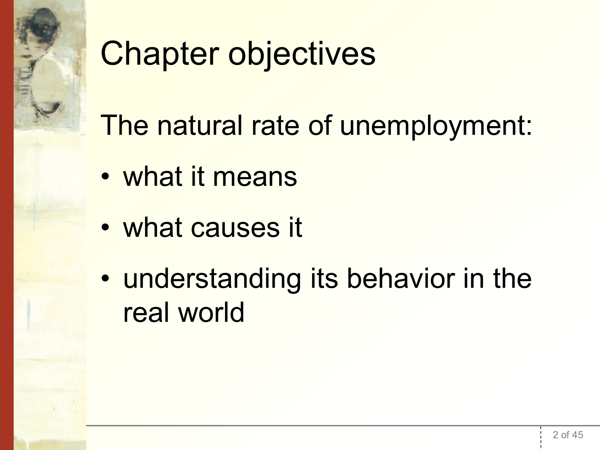
自然失业率（natural rate of unemployment）：
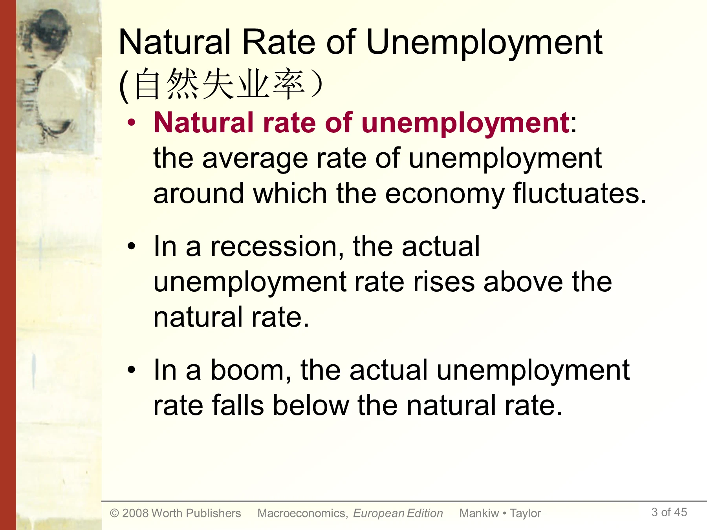
自然失业率：经济围绕其波动的平均失业率。
衰退时，实际失业率高于自然率。
繁荣时，实际失业率低于自然率。
这个定义的重心在「平均」两个字上。它把失业率拆成一个缓慢移动的中枢和一段围绕中枢的上下振动：中枢是自然率，振动是周期成分。于是任何一个时点的实际失业率都可以写成两者之和，而这两部分由完全不同的力量驱动——中枢由劳动力市场的制度与摩擦决定，振动由总需求决定。
「自然」这个词容易误导，它不表示这个水平是天然的、正当的或者不可改变的。它只是一个标签，用来指称「在没有总需求扰动时，这个经济体的失业率会停在哪儿」。一个经济体可以有 4% 的自然率，也可以有 12% 的自然率，取决于它的失业保险慷慨程度、工会力量、最低工资水平和劳动力流动速度。
自然率不是最优率。它可能过高，也可能过低；说它是「自然」的，只是说它不由短期的需求管理决定。
The natural rate of unemployment is the “normal” unemployment rate the economy experiences when it is neither in a recession nor a boom.
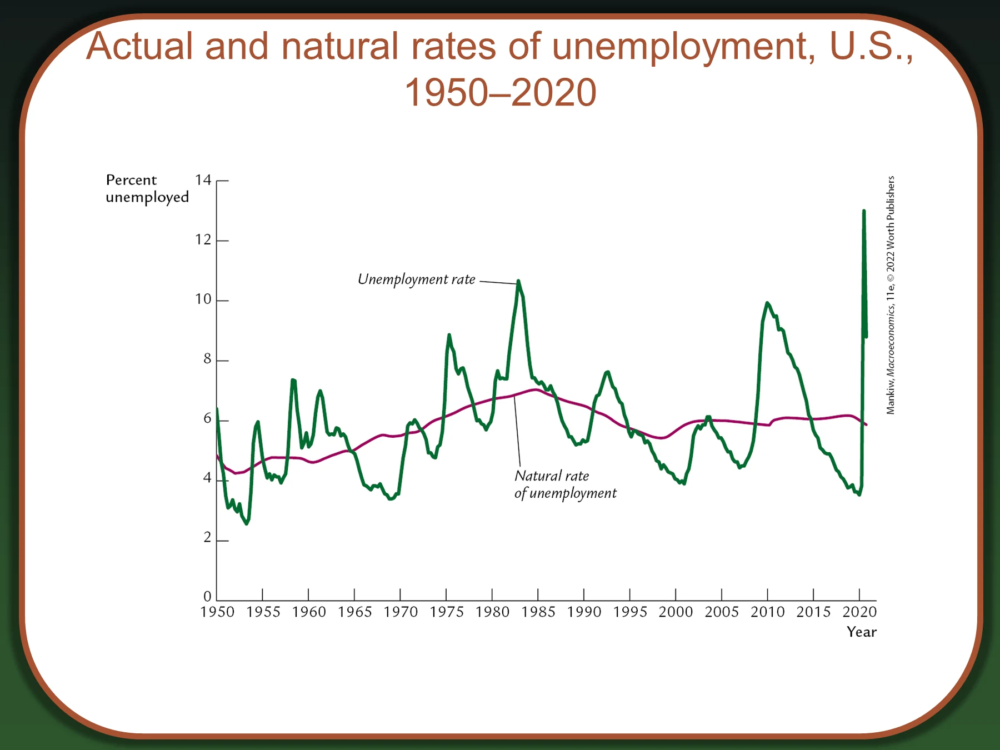
两条线：一条剧烈波动，一条平缓移动。
图中 横轴为年份 1950–2020，纵轴为失业率（%）。粗线为实际失业率（UNRATE），细线为自然失业率估计值（NROU）。实际率在 3.5% 至 14.8% 之间起伏，自然率大致在 4% 至 6.5% 之间缓慢移动。
把两条线叠在一张图上，先要分清读的是什么。粗线是每月调查出来的事实，细线是用统计方法估计出来的构造物——它没有直接观测值，只能通过平滑实际失业率、扣除周期性因素反推。所以两条线的关系不是「一个真实、一个虚假」，而是「一个可观测、一个被推断」。
读图时看两件事。第一，粗线穿过细线的方向：1982 年、2009 年、2020 年粗线远远在上方，那是衰退；1960 年代末、2000 年前后粗线在下方，那是繁荣。第二，细线本身的形状：它从 1960 年代的 5% 出头升到 1970 年代末的 6.5% 附近，再一路降到 2000 年代的 5% 以下。自然率自己也在动，而且动得很慢，方向可以持续二三十年。
本章要解释的是细线，粗线的短期跳动留给讲经济周期的部分。
Similar to Figure 7-1, in the textbook.
The actual unemployment rate fluctuates considerably over the short run. These fluctuations are the focus of Part IV of the book.
For this chapter, though, our goal is to understand the behavior of the natural rate of unemployment, essentially the long-run trend in the unemployment rate.
Source: BLS, obtained from http://research.stlouisfed.org/fred2/ NROU (Natural Rate) UNRATE (Unemployment rate)
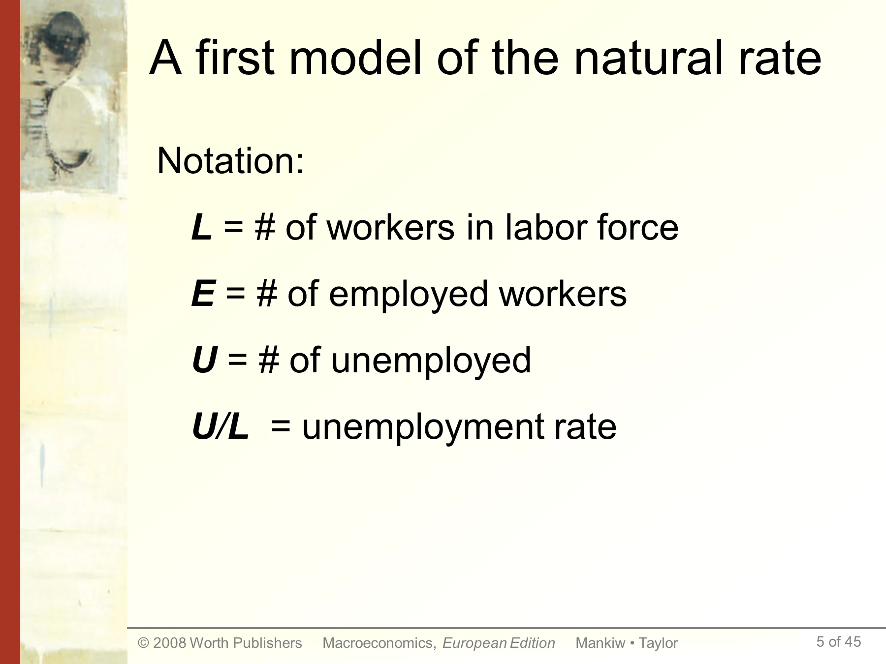
记号：
四个记号里藏着一个恒等式：L ＝ E ＋ U。劳动力被划成互斥的两块，每个人要么在岗，要么在找工作，没有第三种状态。这个二分法把「退出劳动力」的人排除在外——不找工作的成年人既不算就业也不算失业，所以失业率的分母不是成年人口，而是劳动力。
这一点决定了后面所有结论的适用范围。如果一批失业者彻底放弃求职，U 会下降，失业率随之下降，但就业并没有增加。失业率的改善可以是假的，只要分母缩得比分子快。
Section 6-1
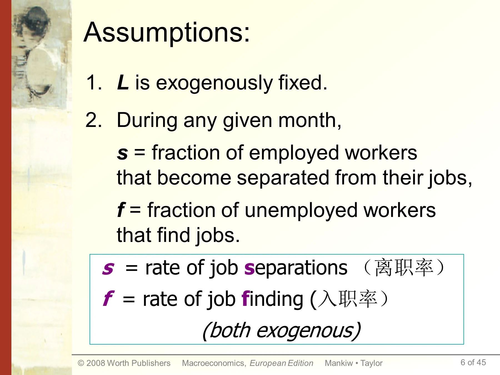
1. L 是外生固定的。
2. 在任意给定月份内：
s ＝ 离职率（rate of job separations）
f ＝ 入职率（rate of job finding）
（两者均为外生）
上一页只给了分类，这一页给的是分类之间的通道。模型不再问「有多少人失业」，而是问「每个月有多少人从就业流向失业、有多少人反向流动」。这个视角的转换很重要：存量是结果，流量才是原因。失业人数可以连续三年不变，而每年有上千万人次进出——两个经济体可以有相同的失业率，却有完全不同的流动速度。
两个假设各自关掉了一扇门。L 固定，意味着人口增长、移民、劳动参与率的变化都不在模型里，失业率的变动只能来自 E 与 U 之间的重新分配。s 与 f 外生，意味着它们不受失业率本身、也不受政策的影响——它们是参数，不是变量。
把这两点合起来，模型就成了一个水池：就业池里的水以每月 s 的比例漏出，失业池里的水以每月 f 的比例被抽回。水位最终停在哪儿，只取决于两个阀门的相对大小。失业在模型里不是「失败」，而是两个流量在某一水平上达成的平衡。
外生假设是有代价的，代价在于它无法回答最有意思的问题：衰退时为什么失业率会跳起来？答案显然是 f 下降了，而 f 之所以下降，又是因为企业减少招聘、匹配变难。也就是说，f 会随周期和失业水平本身变化。把 f 当作常数，等于假设这些反馈不存在。本章接受这个代价，是为了先把长期水位算清楚；一旦允许 f 随失业率下降，模型就会出现多重均衡的可能——同一个经济体既可能停在低失业，也可能停在失业者越多、越难被雇用的高失业状态。这个机制在讲长期停滞与滞后效应时会重新出现。
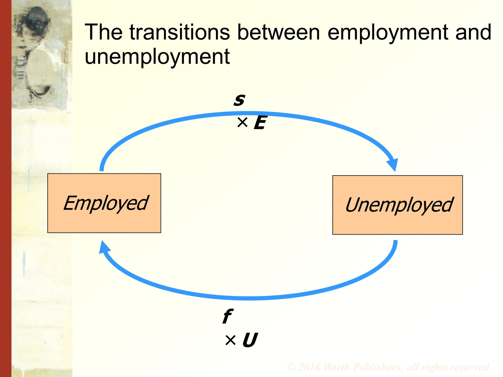
两个方框，两支箭头：
就业者 ── s × E ──→ 失业者 失业者 ── f × U ──→ 就业者图中 左侧方框为「就业」，右侧方框为「失业」。向下的箭头标注 s×E，表示每月从就业转为失业的人数；向上的箭头标注 f×U，表示每月从失业转为就业的人数。方框大小与两类人数不成比例。
箭头上的乘积值得停一下。s 是一个比例，乘上 E 才变成人数；f 乘 U 同理。所以模型的参数是比率，而模型的状态是人数，两者之间隔着一个乘法。这也解释了为什么就业池越大，每月的流出量越大：哪怕 s 只有 1%，一亿五千万就业者每月也有一百五十万人离职。
两支箭头的粗细往往接近，这正是失业率稳定的原因——不是没人流动，而是双向流动大致抵消。一个失业率为 5% 的经济体，可能同时有 2% 的就业者在离职、2% 的失业者在入职。看到「失业率没变」就说「劳动力市场没动」，是把存量当成了流量。
Figure 7-2, p. 185
(Note: The size of the boxes containing the words “employed” and “unemployed” are not proportional to the number of people in each category.)
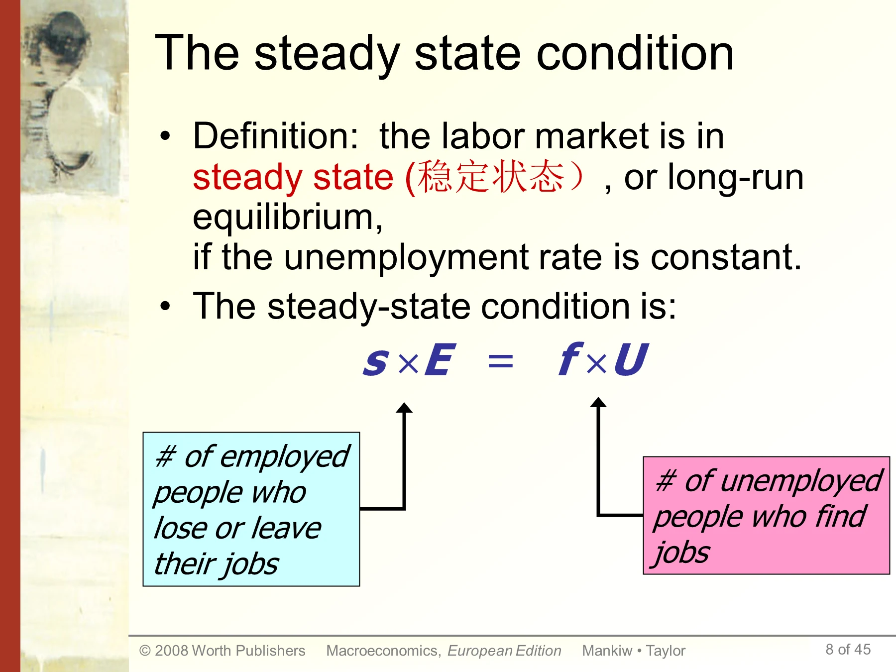
定义：如果失业率保持不变，劳动力市场就处于稳定状态（steady state），或称长期均衡。
稳定状态条件为：
s E ＝ f U左侧：找到工作的失业者人数。
右侧：失去或离开工作的就业者人数。
稳定状态的定义是「失业率不变」，不是「失业为零」，也不是「没有人离职」。这三个说法经常被混在一起。一个人数不变的水池可以有很大的进水和出水，只要两者相等。
条件式 sE ＝ fU 就是「进水等于出水」的代数写法。它的逻辑很直接：如果每月找到工作的人多于失去工作的人，U 会下降；反过来 U 会上升；只有当两者相等，U 才静止不动。这是一个动态平衡，任何偏离都会被反向的力量推回来——U 偏高时 fU 变大而 sE 变小，流出超过流入，U 回落。
要留意的是，这个条件本身还没有解出任何东西，它只是把「失业率不变」翻译成了一个方程。真正的信息在下一步：把 E 换成 L − U。这一步之所以关键，是因为它让方程里只剩一个未知数 U，而 L 是已知的常数。稳定状态条件之所以可解，靠的是劳动力总量固定这个假设；一旦允许 L 变化，方程就多了一个自由度，失业率不再由 s 与 f 唯一决定。
另一个容易滑过去的点：这个「均衡」是流量均衡，不是价格均衡。整个推导里没有出现工资，也没有出现企业的用工决策。工资的作用被压缩进了 f——工资如何影响求职与招聘，模型不解释，只是把它当作给定的常数。这是后面引入工资刚性时才会打开的盒子。
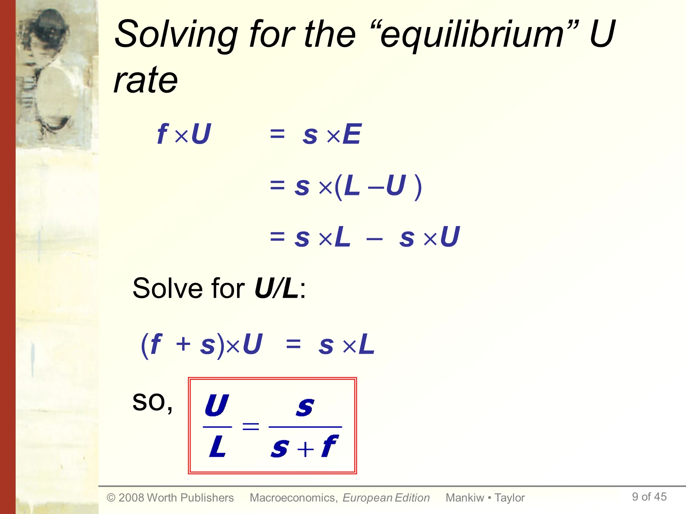
解出 U/L：
(f ＋ s) U ＝ s L所以，
U/L ＝ s / (s ＋ f)推导只有三步，每一步都在消掉一个变量。
第一步，把 E 换成 L − U。这是唯一用上劳动力恒等式的地方，目的是让等式两边只剩 U 一个未知量。替换后右边出现两项：sL 是「假如所有人都就业，每月会离职的人数」，sU 是要扣掉的部分，因为失业者本来就不会离职。
第二步，把含 U 的项移到同一边。fU ＝ sL − sU 变成 fU ＋ sU ＝ sL，左边提取公因子得 (f ＋ s)U ＝ sL。这一步没有任何经济学，只是代数整理，但它的形式很有用：左边括号里是 s 与 f 之和，可以读成「失业池被抽干的总体速度」——失业者要么找到工作（f），要么这个位置被新离职者补上（s），两者共同决定 U 相对 L 的稳态位置。
第三步，两边同除以 (s ＋ f)L，得到 U/L ＝ s/(s ＋ f)。
结果的形式值得记住，因为它把三个量的关系压缩成了一个比值。分子 s 是「进水的相对速度」，分母 s ＋ f 是「总流动速度」。所以自然失业率本质上是离职流量在总流量中的占比。这个读法立刻给出两个推论：s 上升则失业率上升，f 上升则失业率下降，而且两者的影响不是对称的——f 趋近于零时失业率趋近于 100%，s 趋近于零时失业率趋近于零。
还有一个隐含约束：这个公式只保证 U/L 在 0 与 1 之间，不保证它在合理范围内。如果代进去算出 40%，那不是模型错了，而是说明这个经济的 f 太低，低到模型描述的机制（绝大多数失业者每月都能找到工作）已经不适用。
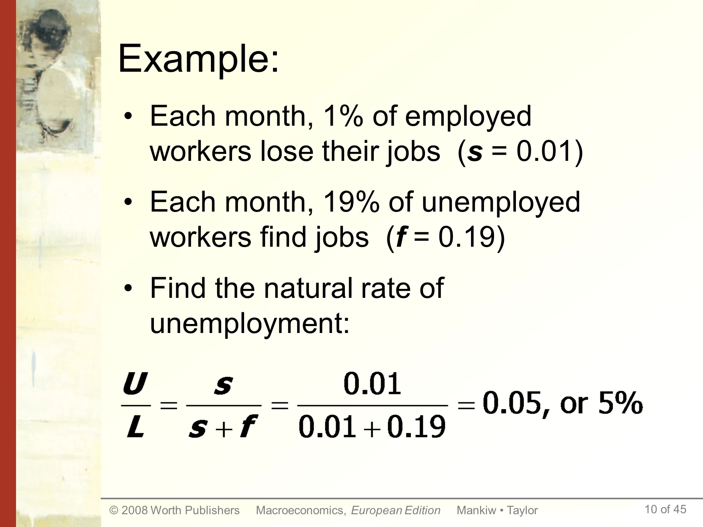
每月有 1% 的就业者失去工作（s ＝ 0.01）。
每月有 19% 的失业者找到工作（f ＝ 0.19）。
求自然失业率：
U/L ＝ s/(s ＋ f) ＝ 0.01/(0.01 ＋ 0.19) ＝ 0.05即 5%。
把数代进去：分母 0.01 ＋ 0.19 ＝ 0.20，分子 0.01，比值 0.05。自然失业率 5%。
这两个参数不是随手编的，它们各自有可以直接读出来的含义。1/s 是平均在职时间：s ＝ 0.01 意味着一个人平均每 100 个月离职一次，约八年四个月。1/f 是平均失业持续时间：f ＝ 0.19 意味着失业者平均要等 5.3 个月才能重新上岗。两个数一长一短，正是一个正常劳动力市场的样子。
更直观的算法是不用公式，直接算人数比。稳态下 sE ＝ fU，所以 U/E ＝ s/f ＝ 0.01/0.19 ≈ 1/19。每 19 个就业者对应 1 个失业者，失业率就是 1/(1＋19) ＝ 5%。这个算法说明了公式的来源：它不是拟合出来的，而是人数比例的直接换算。
拿它做两个反事实，可以看出模型对哪个参数更敏感。若 f 从 0.19 升到 0.29（失业者找工作快了三成），u ＝ 0.01/0.30 ≈ 3.3%，降了 1.7 个百分点。若 s 从 0.01 降到 0.005（离职率减半），u ＝ 0.005/0.195 ≈ 2.6%，降了 2.4 个百分点。同样幅度的相对改善，压低离职率比提高入职率更有效，因为 s 在分子上，而 f 只在分母里。
这个不对称有政策含义：想快速降低失业率，就该想办法让匹配更快（f）；想持久地降低失业率，得减少离职本身（s）。但后者往往要靠提高解雇成本，而那会让企业更不愿意招人，反过来压低 f——这个反馈在模型里被外生假设切掉了，现实里它存在。
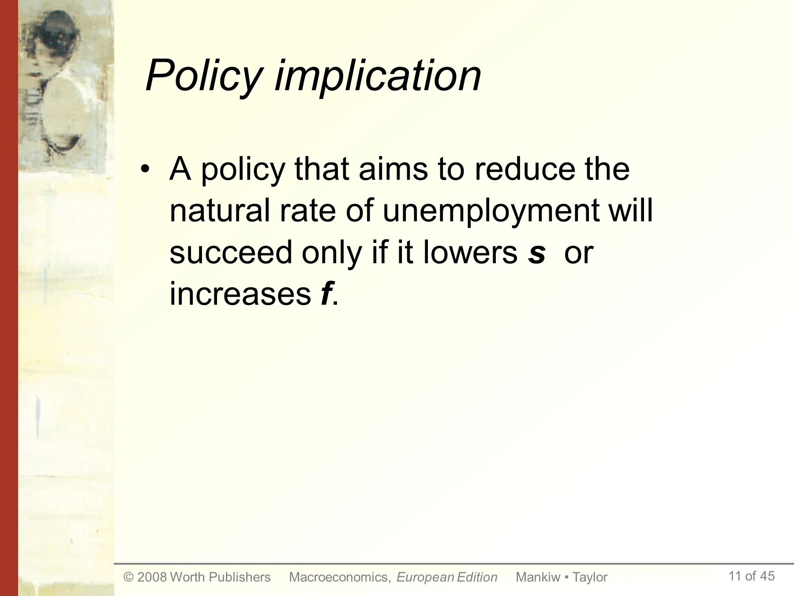
一项以降低自然失业率为目标的政策，只有降低 s 或提高 f 时才可能成功。
这句话是公式的直接推论，但它排除的东西比它包含的东西更有意思。既然 u 只由 s 与 f 决定，那么任何不改变这两个流量的政策——补贴、基础设施投资、产业规划——都无法降低自然失业率，它们能影响的只是实际失业率围绕自然率的偏离。
把政策按作用对象分类，就有了清楚的判据：就业信息平台、职业培训、简化招聘手续作用于 f；解雇保护、临时合同管制、法定退休年龄作用于 s。两类政策的代价不同，前者的成本是财政支出，后者的成本落在企业身上，而企业会用减少招聘来回应。
降低 s 的政策常常同时压低 f，这个抵消在模型外，却是欧洲劳动力市场改革争论的核心。
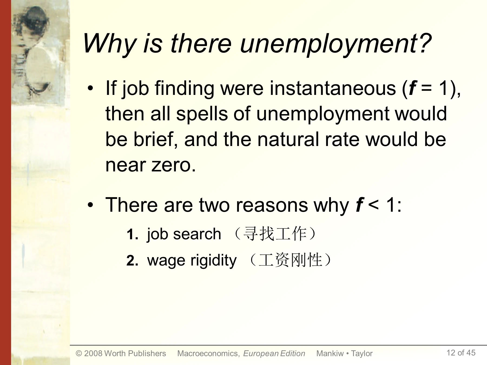
如果找工作可以瞬间完成（f ＝ 1），那么所有失业都极为短暂，自然失业率会接近零。
f < 1 有两个原因：
这个反事实把问题问对了：既然稳态失业率等于 s/(s＋f)，那它之所以不为零，唯一的原因是 f 不等于 1。如果失业者当月就能上岗，U 会瞬间清空，稳态失业率归零。所以「为什么有失业」等价于「为什么 f 小于 1」。
两个原因的性质完全不同。求职造成的 f < 1 是技术性的：信息要传递、面试要安排、搬家要时间，即使工资完全灵活、岗位总数足够，也需要时间。工资刚性造成的 f < 1 是价格性的：工资被某种力量顶在均衡水平之上，愿意工作的人多于岗位数，于是有人无论怎么找都找不到。
区分二者的意义在于政策。前者是匹配效率问题，能靠信息和培训改善；后者是价格问题，只能靠改变工资形成机制，或者接受它。两类失业都表现为「找不到工作」，但一类是岗位在等人，另一类是人多过了岗位。
这个二分法也有盲点。现实中两者交织：一个因最低工资被挡在门外的非技能工人，同时也在承受信息不畅的摩擦。模型把它们分开处理，是为了让机制清楚，不是因为它们真的可以分开。
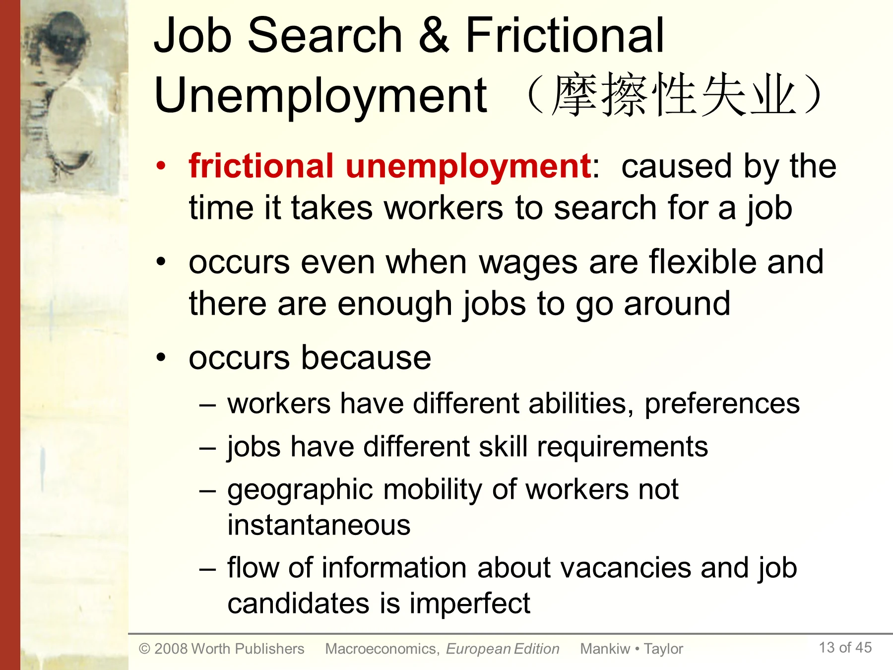
摩擦性失业（frictional unemployment）：由工人寻找工作所花费的时间造成的失业。
即使工资灵活、岗位数量充足，它也会出现。
它之所以出现，是因为：
「即使岗位充足也存在」这句话是这一页的关键，也是最容易被跳过的地方。它说的是：把所有的岗位空缺和所有的失业者放在一起，数量上完全匹配——空缺数等于失业人数——失业依然存在。因为匹配不是计数，是配对，而配对需要时间和信息。
想想租房市场。一个城市有 1000 套空房和 1000 个找房的人，空置率不会因此归零。有人要离单位近，有人要带电梯，有人预算只有三千；房子也一样挑剔。搜寻的过程就是把两列各不相同的清单对上，这个过程本身消耗时间，而消耗掉的时间在统计上就是空置率。劳动力市场完全同构：失业率的一部分不是「没有岗位」，而是「岗位和人还没碰上」。
四个原因各对应一个摩擦源。能力与偏好的差异意味着配对有个性化的匹配质量，随便接受一份工作会有损失，所以理性的人会继续找。技能要求的差异意味着并非所有空缺都对所有失业者开放，一个会计不会被招去开塔吊。地理不流动意味着本地岗位再多，跨州搬家也要成本，而搬家的成本常常高于继续失业的收益。信息不完善意味着双方都不知道对方存在，招聘广告和简历库只是把搜索范围缩小，不能消除搜索。
这四点共同指向一个结论：摩擦性失业的规模取决于匹配技术的效率，而不取决于岗位的总量。这解释了为什么刺激总需求对这类失业几乎无效——多出来的岗位如果仍然需要三个月才能配上人，失业率不会下降多少，只会让空缺率上升。它也解释了为什么互联网招聘、背景核查、职业资格互认这类看似与「就业政策」无关的制度改进，能实质性地降低自然失业率：它们缩短的是配对时间，也就是直接抬高 f。
常见误读：把摩擦性失业当成「自愿失业」的道德问题。它更接近一种交易成本，和买卖双方是否努力无关。
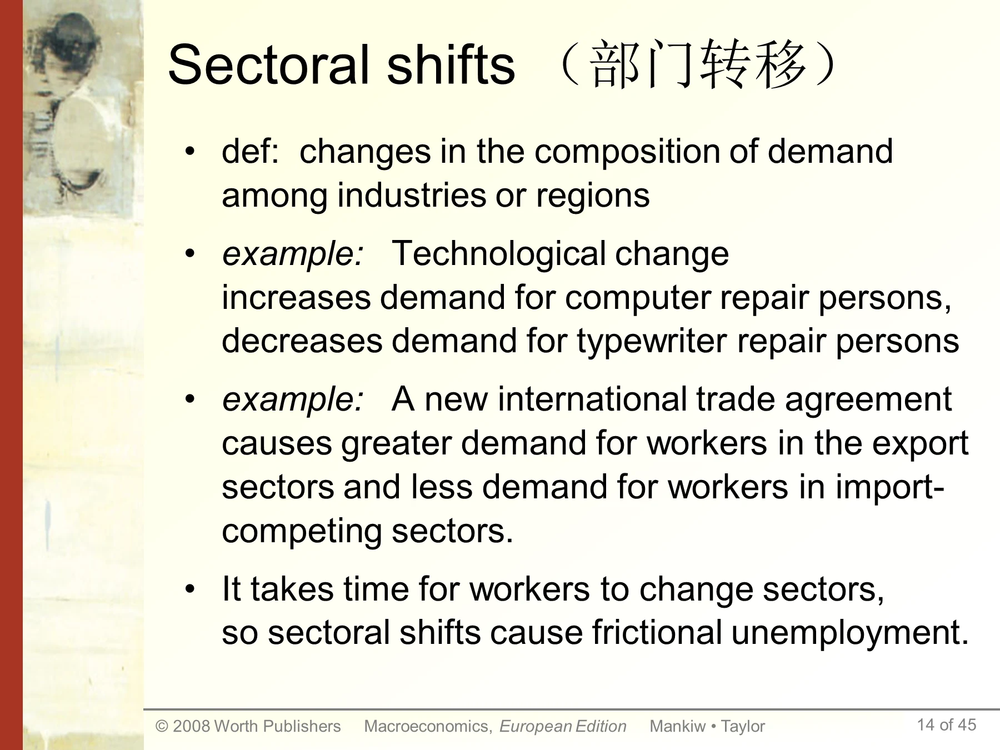
定义：各行业或各地区之间需求构成的变化。
例：技术进步增加了对电脑维修人员的需求，减少了对打字机维修人员的需求。
例：一项新的国际贸易协定使出口部门对工人的需求增加，使进口竞争部门对工人的需求减少。
工人转换部门需要时间，因此部门转移会造成摩擦性失业。
部门转移是摩擦性失业最实在的来源，因为它把「匹配需要时间」具体化成了「一个人要换掉自己的谋生技能」。
定义里「构成」两个字不能省。总需求全面下降造成的是周期性失业：所有行业一起收缩，等需求回来，原来的岗位还在。部门转移不是这样，它是一部分行业扩张、另一部分收缩，总量可以不变，甚至总岗位数可以增加，但新增的岗位在另一个地方、要求另一套技能。打字机修理工的困境不是没有工作，而是有工作的那些地方他进不去。
两道门槛决定了这类失业持续多久。技能门槛：专用人力资本不可携带，四十五岁的老技师重新学编程，学费之外还要付出十几年的经验折价。地理门槛：底特律的工人未必愿意去德州，房价、配偶工作、子女学校都是成本。门槛越高，f 越低，失业拖得越长。
这里有一个容易被忽略的反馈：当再就业的希望足够渺茫时，一部分人会停止找工作，退出劳动力。统计上他们的失业结束了，失业率下降了，但就业并没有增加。所以部门转移的严重程度不能只看失业率，还要看劳动参与率——两个指标同时下降，才是坏消息。年长的 displaced workers 最容易走这条路，因为他们的技能专用性最强、投资回收期最短。
部门转移与衰退要分清。衰退是总量现象，会自己结束；部门转移是结构现象，不会自己结束，除非劳动力完成了重新配置。这也解释了为什么有些地区的失业率在整体复苏之后仍然停在两位数：总需求回来了，但那些岗位没有回来。
Sometimes the unemployment caused by sectoral shifts is severe. Due to increasing imports, the British car industry has been in decline for years. Many workers in this industry have lost jobs. Many of these workers are in their 50s and have worked in this industry for decades. Such workers are unlikely to have the skills necessary to get jobs available in newly booming industries, and they are less likely to invest in the acquisition of the necessary skills for these jobs. Hence, such workers are at greater risk for becoming “discouraged workers.”
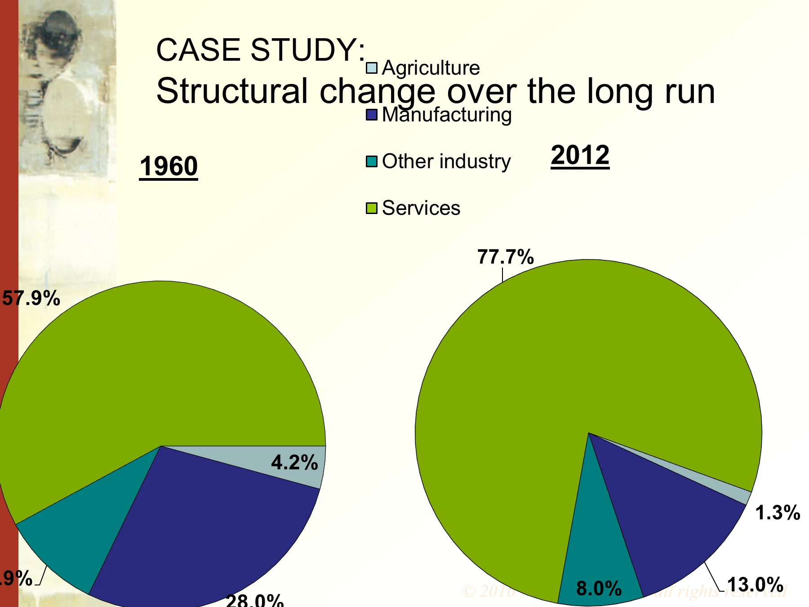
四类行业在美国 GDP 中所占份额的变化，1960–2012。
图中 两张饼图（或堆叠图）对比 1960 年与 2012 年的构成，四类为农业、制造业、服务业、其他行业（含建筑、采矿、电力、水、燃气）。农业份额下降约四分之三，制造业份额下降一半以上，服务业份额显著上升。
半个世纪里，四类的相对位置全部改写过。制造业份额掉了一半以上，农业这个本来就很小的块又掉了约四分之三，腾出来的空间被服务业填满。结果是今天存在的岗位类型，与两代之前几乎不可比。
读这张图要小心一点：份额是产出占比，不是就业人数。某个行业份额下降，可能是因为它增长得比别的行业慢，也可能是因为它的生产率提高得快、用更少的人产出同样的东西。农业就是后一种——份额跌到极小，产量却一直在增。所以份额变化不等于失业，但它是部门转移的背景条件：当需求构成持续变化时，总有一部分人的技能在贬值。
All figures are industry shares in U.S. GDP. “Other industry” includes construction, mining, electricity, water, and gas.
From 1960 to 2012, there are huge changes in all four categories. Manufacturing falls by over half.
Even the “tiny” category of agriculture drops by about three-fourths.
As a result of these huge structural shifts, the types of jobs available now are vastly different than just two generations ago. Source: World Development Indicators, World Bank. Agriculture NV.AGR.TOTL.ZS；Manufacturing NV.IND.MANF.ZS；Services NV.SRV.TETC.ZS
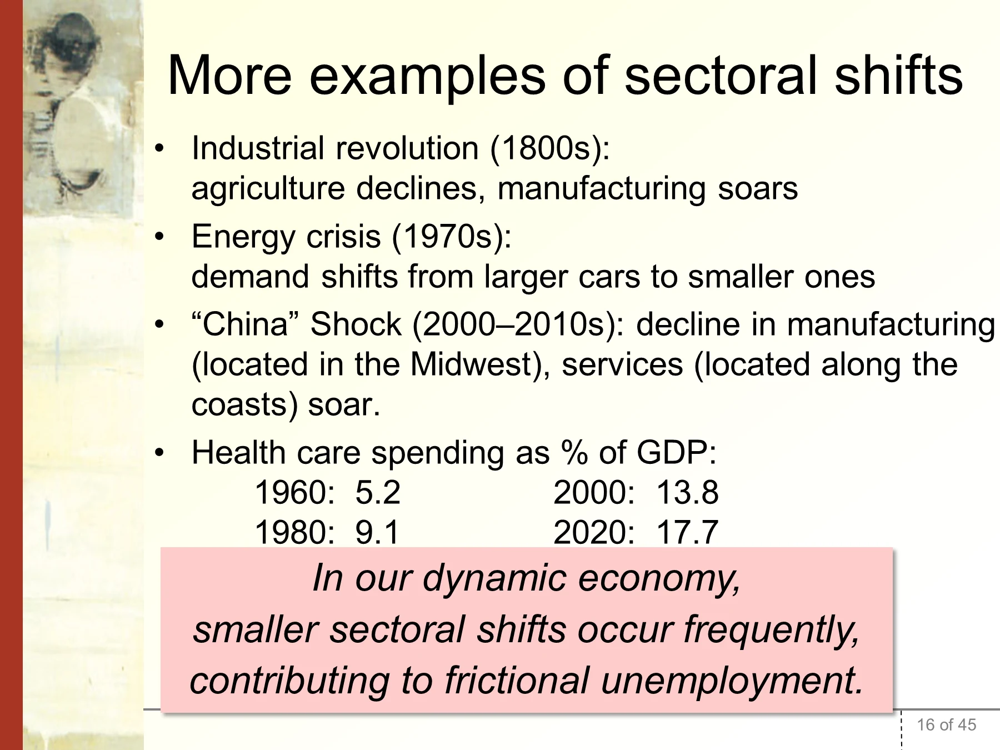
工业革命（19 世纪）：农业衰落，制造业飙升。
能源危机（1970 年代）：需求从大车转向小车。
「中国」冲击（2000–2010 年代）：制造业（集中在中西部）衰落，服务业（集中在沿海）飙升。
医疗支出占 GDP 比重：1960 年 5.2%；1980 年 9.1%；2000 年 13.8%；2020 年 17.7%。
在我们这个动态的经济中，规模较小的部门转移频繁发生，不断制造摩擦性失业。
列出的三个大事件都以十年为单位展开，但它们不是自然失业率的主要来源——太罕见了。真正持续供水的，是那些不会上新闻的小转移：一家工厂换了供应商，一个城市的主导产业从纺织变成物流，某个职业因为软件更新而减少一半人手。
医疗支出那条数据是另一种转移：5.2% 到 17.7%，六十年里经济资源的近五分之一重新配置到了同一个方向。这种单向的持续移动，每年都在从其他行业抽走劳动力，而抽走的速度刚好快到需要不断重新匹配，又慢到不引发危机。
自然失业率里的摩擦成分，主要由这些小转移的累积速度决定，而不是由工业革命级别的断裂决定。
Most of the examples on this and the previous slides are big changes that have occurred over many years. These examples give students a good idea of what sectoral shifts are. Perhaps more important for the natural rate, though, are the many smaller changes that occur more frequently. Ours is a dynamic economy: the structure of demand is shifting almost continuously, due to changes in preferences, technology, and the location of production. As a result, there is a near-continual flow of newly frictionally unemployed workers.
Sectoral shifts are distinct from recessions (which also cause unemployment). In recessions, there is a general fall in demand across industries, and the unemployment that results is cyclical. Sectoral shifts, though, are changes in the composition of demand across industries, and lead to frictional unemployment as described above.
Source of health expenditure data: http://www.cms.hhs.gov/NationalHealthExpendData/02_NationalHealthAccountsHistorical.asp#TopOfPage
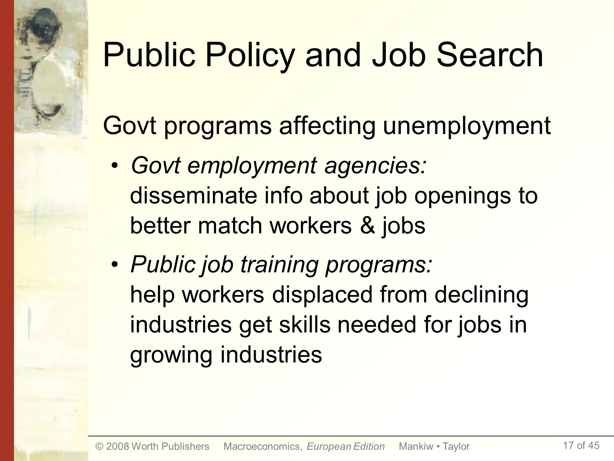
影响失业的政府项目：
这两项政策针对的是同一件事的两半：信息与技能。就业机构降低搜索成本，让本来就合格的双方更快相遇，作用在 f 上；培训项目改造供给，让原本不合格的人变得合格，作用在匹配的可能性上。两者都不改变岗位数量，也不改变工资水平。
它们的效果有共同的上限：如果岗位本身不存在，匹配得再快也没用。所以这类政策在经济结构变动剧烈时最有用——此时空缺与失业并存，问题确实出在配对；在总需求不足时最无用，此时空缺本来就少，加速配对只是让同一批人更快地轮流失业。
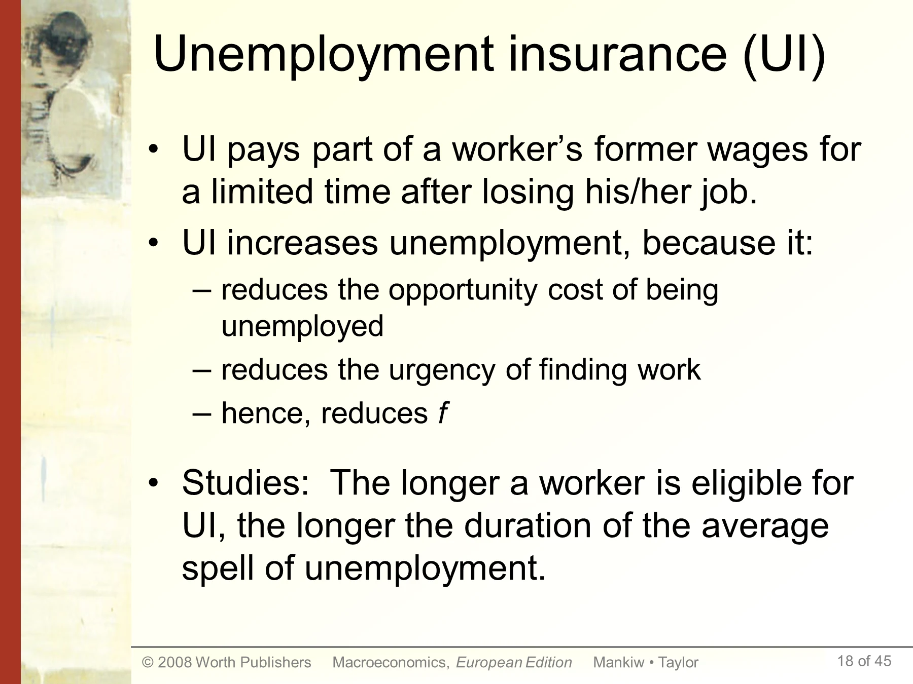
失业保险在工人失业后的一段时间内，支付其原工资的一部分。
失业保险会提高失业，因为它：
研究：工人领取失业保险的资格期越长，平均失业持续时间越长。
机制是一条三段链：给钱 → 不工作的代价变小 → 找得慢一些。三段里没有任何一段涉及道德判断，全是价格反应。失业的机会成本就是「不工作所放弃的收入」，保险金把它从全部工资降成工资减去保险金，于是继续搜寻的边际成本下降，最优的搜寻强度随之下降。
这里要精确一点：保险改变的是 f，不是 s。它不影响一个人是否会被解雇，只影响被解雇之后多快重新上岗。所以在模型里，失业保险的作用是让失业率上升，但上升的方式是失业时间变长，而不是失业人数变多。这两者在统计上都会推高失业率，在福利上的含义却完全不同。
实证证据集中在「资格期」这个变量上。美国常规失业保险最长 26 周，危机时可以延长到 99 周。研究发现，每当上限被延长，平均失业持续时间就跟着上升，而且上升的幅度在临近上限时最明显——因为那时失业者面临「补助即将到期」的断点，会在到期前后集中上岗。这种在断点处的聚集，是识别激励效应最干净的证据：同一个人，仅仅因为日历翻到了第 27 周，求职强度就跳升。
但把这条结论直接读成「保险有害」是错的。保险的存在理由是市场失灵：工人无法为「失业」这个风险买私人保险，因为逆向选择会让市场崩溃——最容易失业的人最想买。政府强制参保解决了这个问题，代价是激励扭曲。失业保险的设计问题不是要不要有，而是把替代率和期限定在哪儿，使得保险的收益与搜寻的损失在边际上相等。
另一个易错点：把「领取人数增加」当作「保险制造了失业」。危机中领取人数暴增，主因是解雇潮，不是保险。
The text includes a nice case study on unemployment insurance. It discusses evidence that unemployment insurance reduces the job finding rate.
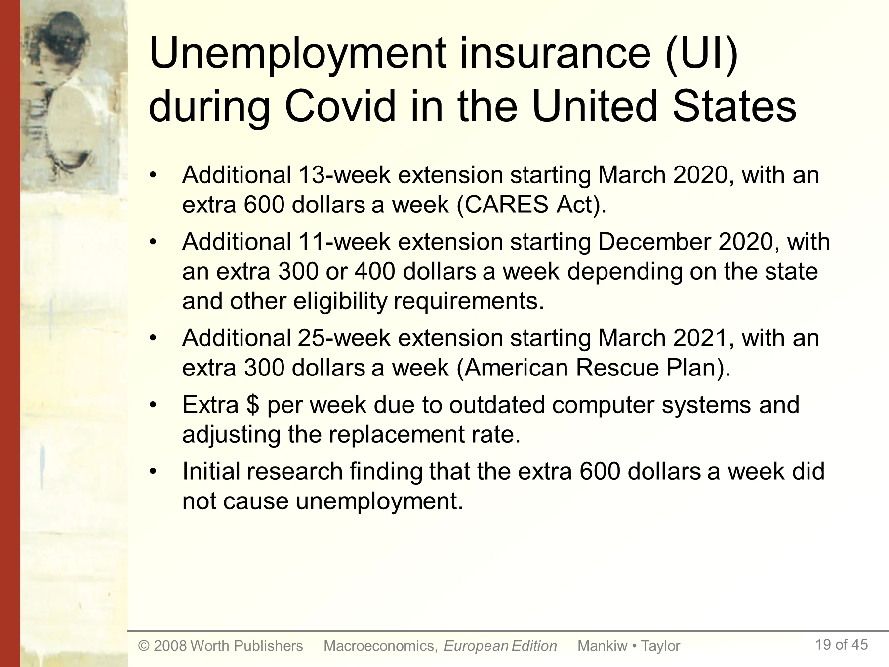
2020 年 3 月起额外延长 13 周，每周加发 600 美元（CARES 法案）。
2020 年 12 月起额外延长 11 周，每周加发 300 或 400 美元，视各州规定与其他资格条件而定。
2021 年 3 月起额外延长 25 周，每周加发 300 美元（美国救援计划）。
每周额外金额的出现，部分源于陈旧的计算机系统与替代率的调整。
早期研究发现，每周额外的 600 美元并未造成失业上升。
这是美国历史上规模最大的一次失业保险扩张，也是检验上一页那条机制的自然实验。按标准推理，把替代率推到接近甚至超过 100%，求职的紧迫性应该消失，失业率应该被顶高。
早期研究却没有找到这个效果，原因在需求侧。2020 年春天的失业不是「有人在挑工作」，而是整个行业被行政命令关停——餐饮、住宿、线下零售。在那种环境下，求职强度再高也换不来岗位，因为岗位不存在。保险金在这种情况下不改变 f，因为 f 已经被外生的封锁压到接近零。激励扭曲只在有岗位可争时才起作用。
这也提示了识别的困难：同一条政策在经济正常时和在危机中效果不同，把危机中的估计外推到常态，会低估扭曲。
Covid was one of the largest expansions of UI in U.S. history. Although students might only know about the direct checks (“stimmys”), the UI expansion was a major part of the response.
Sources for final bullet point: Altonji et al. “Employment Effects of Unemployment Insurance Generosity During the Pandemic”; Bartik et al. “Measuring the Labor Market at the Onset of the COVID-19 Crisis”; Dube “The Impact of the Federal Pandemic Unemployment Compensation on Employment: Evidence from the Household Pulse Survey”; Marinescu et al. “Job Search, Job Posting and Unemployment Insurance During the COVID-19 Crisis”
Great Recession: Expansions allowed for a maximum of 99 weeks of benefits. Briefly paid out an extra 25 dollars a week.
通过给工人更多搜寻时间，
上一页的结论是保险压低 f、抬高失业率；这一页给出反方向的力，于是同一项政策同时出现在成本栏和收益栏里。这就是全部张力的所在。
收益的逻辑要从匹配质量说起。找工作不是抽签，接受第一份offer和找到合适的那份，结果差很远。搜寻时间越长，工人越可能遇到生产率更高、技能更对口的岗位，企业也越可能遇到合适的候选人。匹配一旦变好，工人的工资更高、离职率更低、企业培训的意愿更强——这些收益会持续很多年，而失业延长的那几个月是一次性的。用贴现的眼光看，一笔短期的时间成本换一笔长期的流量收益，完全可能是划算的。
更精细的版本来自搜寻与匹配理论：如果工人和岗位在质量上异质，且双方都不知道对方多好，那么延长搜寻就是投资于信息。保险在这里的作用相当于为这项投资提供流动性——没有保险的工人被迫贱卖自己的劳动力，接受低于其能力的岗位，形成「匹配质量低下 → 频繁跳槽 → 更没有积累」的循环。
但这条收益在实证上比成本弱得多。原因有两层。第一，多数失业者在补助到期前后接受的工资，与他们在更早时点能接受的工资差别不大，说明可选的好岗位本来就不多。第二，雇主知道补助期限，会在到期时压价，把保险的议价收益部分拿走。收益真实存在，但量级通常小于激励损失，这也是各国把替代率定在 40%–70% 而不是更高的原因之一。
把这一页读成「保险其实没成本」是反向的误读。它说的是成本之外还有收益，不是没有成本。
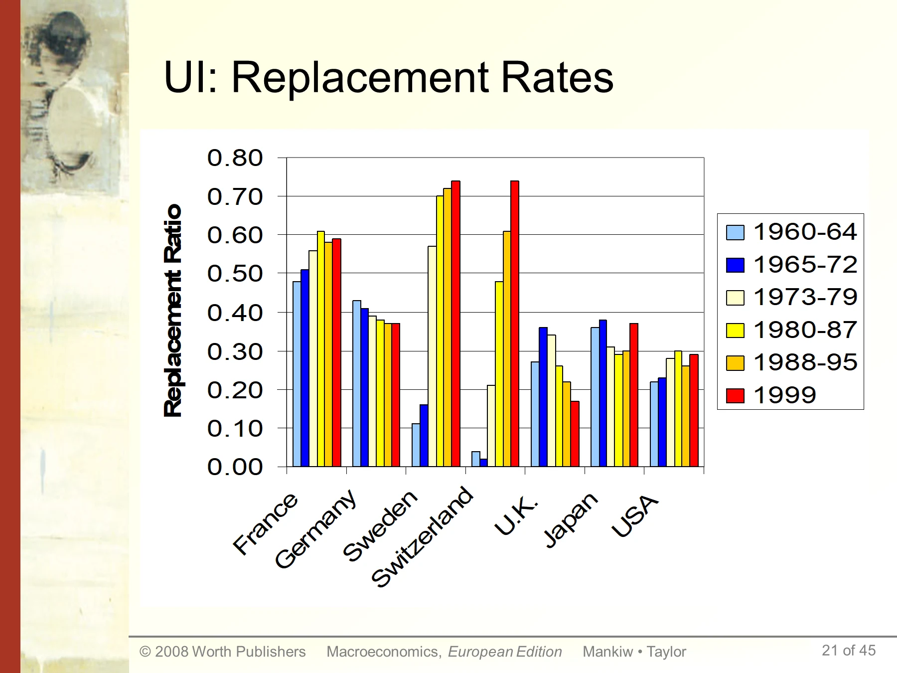
部分国家失业金替代率，1971–2013。
图中 横轴为年份，纵轴为替代率（失业金 / 原工资，%）。数据为下岗后第一年的给付比率，只统计因集体裁员而失业者。瑞典、瑞士在 1970 年代初急升；英国近三十年持续下降。
替代率是失业保险最核心的一个参数，因为它直接决定「不工作比工作差多少」。替代率 60% 意味着失业期间收入下降四成，搜寻的压力适中；90% 意味着几乎无差别，搜寻的经济动机接近于零。
图上有两种走势值得对照。瑞典、瑞士在 1970 年代初的跳升，是政策一次性提高给付的结果，随后几十年基本走平；英国的持续下降则是长期收紧资格与指数的结果。这两条路径说明替代率的变动既可能来自立法，也可能来自「不调整」——在工资上涨时不提高给付上限，实际替代率会自己往下走。
同一失业率下，替代率高的国家失业持续时间更长，这是横向比较里最稳的经验规律之一。
Source: OECD.
This figures correspond to the benefit ratio in the first year after layoff. It is based on benefit payments made to those that became unemployed as a result of a collective layoff.
Note the dramatic increases in this ratios in countries as Sweden and Switzerland in the early 1970s. In the U.K., the replacement ratio has been falling during the last three decades.
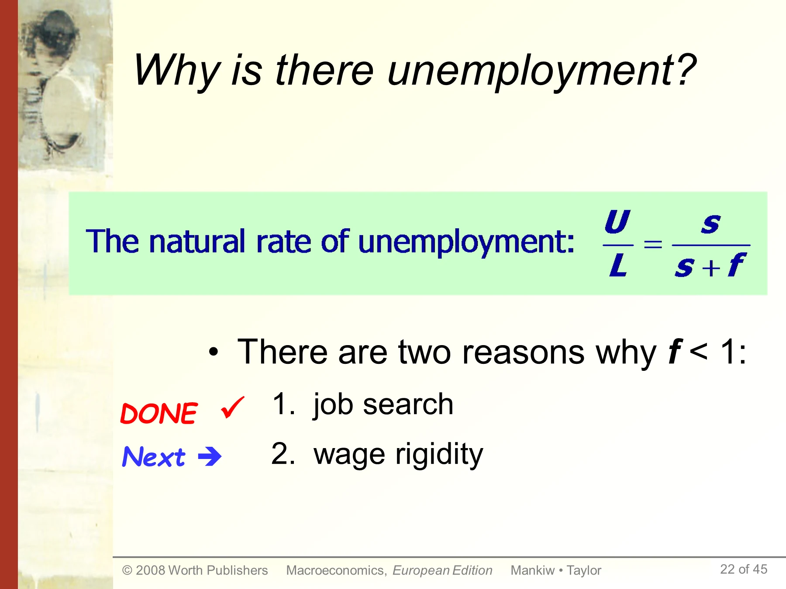
f < 1 有两个原因：
第一项已完成，接下来看第二项。
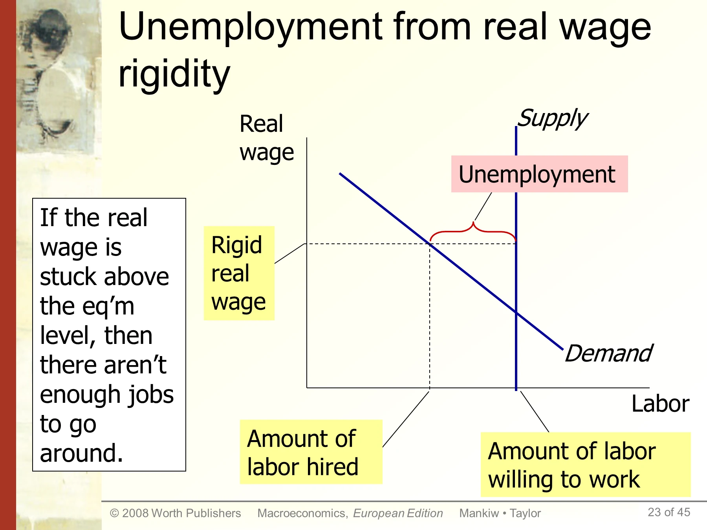
如果实际工资被顶在均衡水平之上，就没有足够的岗位可供分配。
图中 横轴为劳动量，纵轴为实际工资。向下倾斜的为劳动需求，向上倾斜的为劳动供给。一条水平线标为「刚性实际工资」，位于均衡工资之上。在这一工资水平上，就业量由需求曲线决定（企业愿意雇的人数），愿意工作的人数由供给曲线决定，两者的水平距离即为失业。
这张图要读的是两条曲线的水平距离，而不是交点。均衡工资下，劳动供给与劳动需求相交，愿意工作的人恰好等于企业想雇的人，没有缺口。工资被顶到交点之上后，同一个工资水平上出现两个数量：企业按需求曲线只愿意雇这么多，工人按供给曲线愿意来这么多，后者大于前者，差额就是失业。
这个失业的性质与前面完全不同。摩擦性失业里，岗位数是够的，问题是配对慢；这里岗位数不够，问题是价格没调。前者的失业者可以靠更快的信息找到工作，后者的失业者无论怎么找都找不到，因为那些岗位根本不存在。工资刚性把失业从「等待」变成了「排队」。
为什么工资不往下走？这是整页真正的悬念，因为标准的需求供给逻辑说，只要有人愿意以略低的工资工作，企业就该雇他，工资应该一路降到交点。工资刚性意味着这个降价过程被什么东西挡住了。挡它的可能是法律（最低工资）、集体谈判（工会把工资锁在合同里）、也可能是企业自己的选择（效率工资）。三种解释在下一页列出来，机制各不相同，但结果在图上完全一样：一条高于交点的水平线。
要注意这条水平线是「实际」工资，不是名义工资。名义工资可以随物价上涨而调整，只要调整幅度跟上通胀，实际工资仍然刚性。这个区分在通胀高的时候很重要——通胀可以悄悄侵蚀实际最低工资，让刚性的约束自己松开。
Abbreviation: “eq’m” = equilibrium
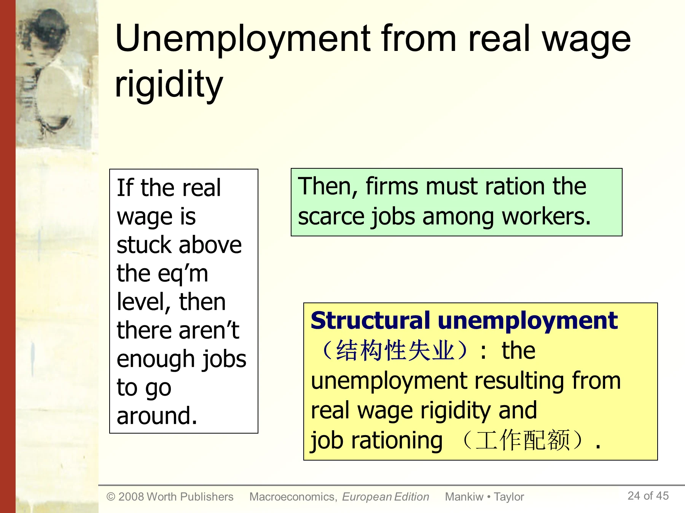
于是，企业必须在工人之间配给稀缺的岗位。
如果实际工资被顶在均衡水平之上，就没有足够的岗位可供分配。
结构性失业（structural unemployment）：由实际工资刚性与岗位配给（job rationing）造成的失业。
「配给」是这一页的核心词，它的意思不是「分配得不公平」，而是「价格不再执行分配功能，只能用别的东西来分配」。
正常市场里，价格干两件事：传递信息、出清市场。工资被固定住之后，第二件事做不了了，于是企业必须在超额应聘者中挑选。挑选的规则可以是学历、证书、工作经验、内部推荐、抽签、排队先后。这些规则本身消耗资源，而且选出来的未必是最合适的人——一个岗位收到 200 份简历，企业花在筛选上的成本，和求职者花在投递上的成本，都是纯粹的浪费。这部分损失在图上完全看不见，因为图只画了数量缺口。
结构性失业这个名字点出了它的性质：它不是周期性的，不会因为需求回升而消失；也不是摩擦性的，不会因为信息改善而缩短。它嵌在工资形成机制里，只要那条水平线还在，缺口就一直在。结构性失业对总需求政策几乎免疫——扩张需求会让企业多雇一点，但只要工资不降，多出来的需求很快变成价格而不是就业。
这也解释了为什么这类失业的治理总归要动工资：要么让最低工资的实际值被通胀侵蚀，要么削弱工会的议价力，要么用补贴抵消高工资的成本。三种办法都不讨喜，因为它们都让某一方直接承担损失。
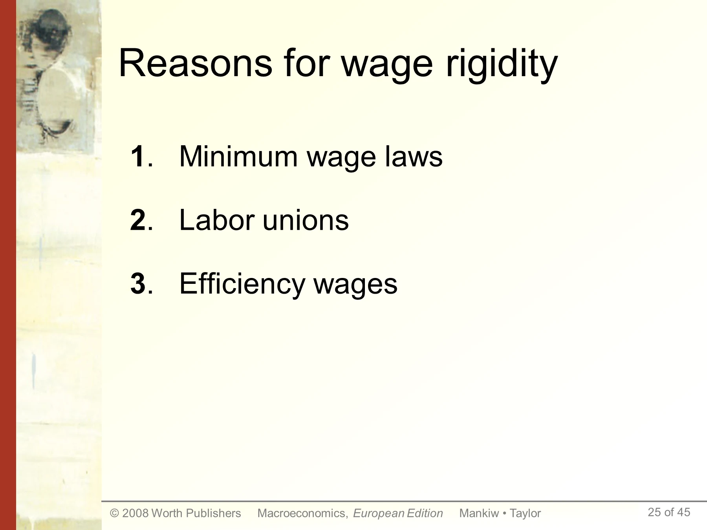
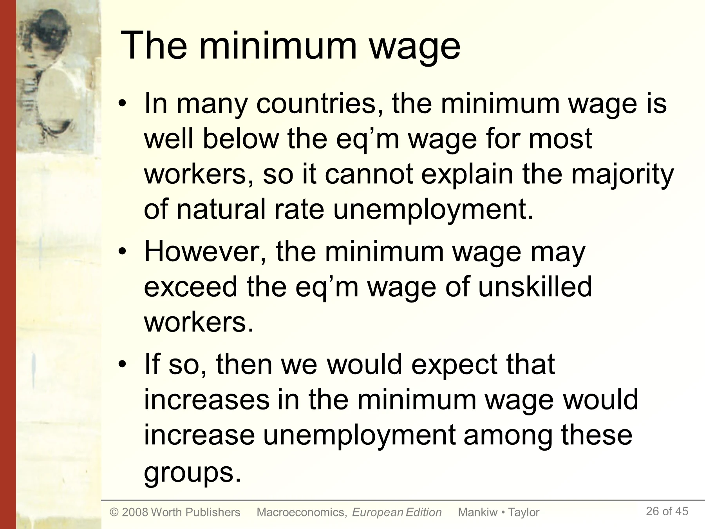
在许多国家，最低工资远低于大多数工人的均衡工资，因此它无法解释自然失业率中的大部分。
然而，最低工资可能高于非技能工人的均衡工资。
若如此，我们会预期最低工资的提高会增加这些群体的失业。
这一页做的是范围界定，而范围界定往往比结论更有用。最低工资是一条法定下限，它只对工资本来会被定在它之下的人有约束力。对一个月薪两万五的程序员，法定下限两千多块完全不起作用，那条线在图上离交点太远。所以用最低工资去解释整体 5% 的自然失业率，是把一个局部约束当成了全局约束。
约束力集中在技能最低、议价能力最弱的那一端：青少年、低学历者、部分服务业岗位。对这些群体，最低工资可能确实高于市场清算水平，图上那条水平线就画在了他们的交点之上，缺口出现。于是预测很清楚：提高最低工资，这些群体的失业上升，而整体失业率几乎不动。这个预测的可检验性很强，因为它同时给出了「有效应」和「没效应」两个方向。
但这个预测依赖一个前提：劳动力市场是竞争性的，企业是价格接受者。如果某个小镇只有一家大厂，企业本身就有压价的能力（买方垄断），此时工资低于竞争水平，就业也低于竞争水平；法定下限把工资往上推一点，反而可能同时提高工资和就业，直到下限超过竞争工资为止。同一个政策在两种市场结构下方向相反，这不是理论不确定，而是前提不同。经验研究的分歧大多源于此：研究对象所在的劳动力市场越集中，最低工资的正效应越容易出现。
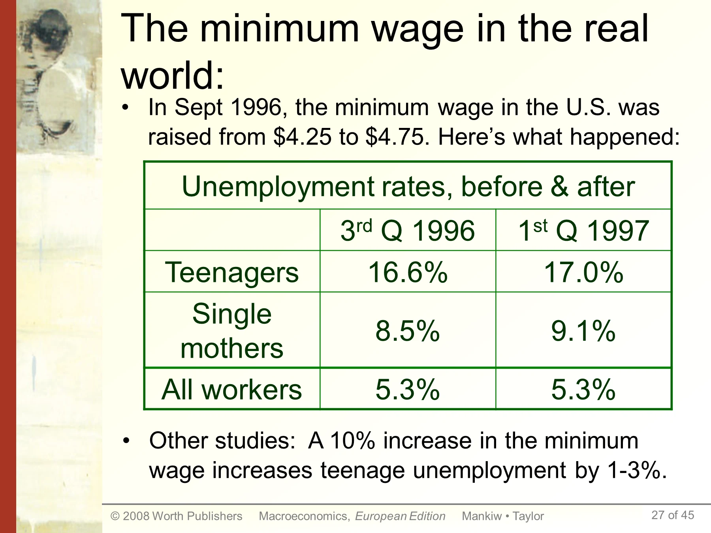
1996 年 9 月，美国最低工资从 4.25 美元提高到 4.75 美元。随后发生的情况是：
| 失业率，调整前后 | 1996 年第 3 季度 | 1997 年第 1 季度 |
|---|---|---|
| 青少年 | 16.6% | 17.0% |
| 单亲母亲 | 8.5% | 9.1% |
| 全部工人 | 5.3% | 5.3% |
其他研究：最低工资每提高 10%，青少年失业率上升 1–3 个百分点。
这张表的设计比数字本身更值得看。它同时给出三个群体，其中「全部工人」是控制组：如果整体失业率也在涨，那青少年和单亲母亲的上升可能只是衰退，不能归因于最低工资。而 5.3% 到 5.3% 说明总需求没有变化，于是另外两行的上升就有了归因的空间。
幅度也符合理论预期：青少年 +0.4 个百分点，单亲母亲 +0.6 个百分点，都是小幅。这与「最低工资只影响低技能端」的判断一致——工资涨了 11.8%，失业率只动了几十分之一个点。
这是相关证据，不是严格的因果识别。同期的州级差异、执行力度、地方景气都可能掺进来。更严格的跨国与州际研究给出的弹性区间，大致就是最后一行那个 1%–3%。
Teens and single mothers are more likely to be in minimum wage jobs than workers from other demographic groups. These data show that these groups experienced higher unemployment after the minimum wage was raised in September 1996. These increases are not due to aggregate shocks, as the overall unemployment rate was the same in both periods.
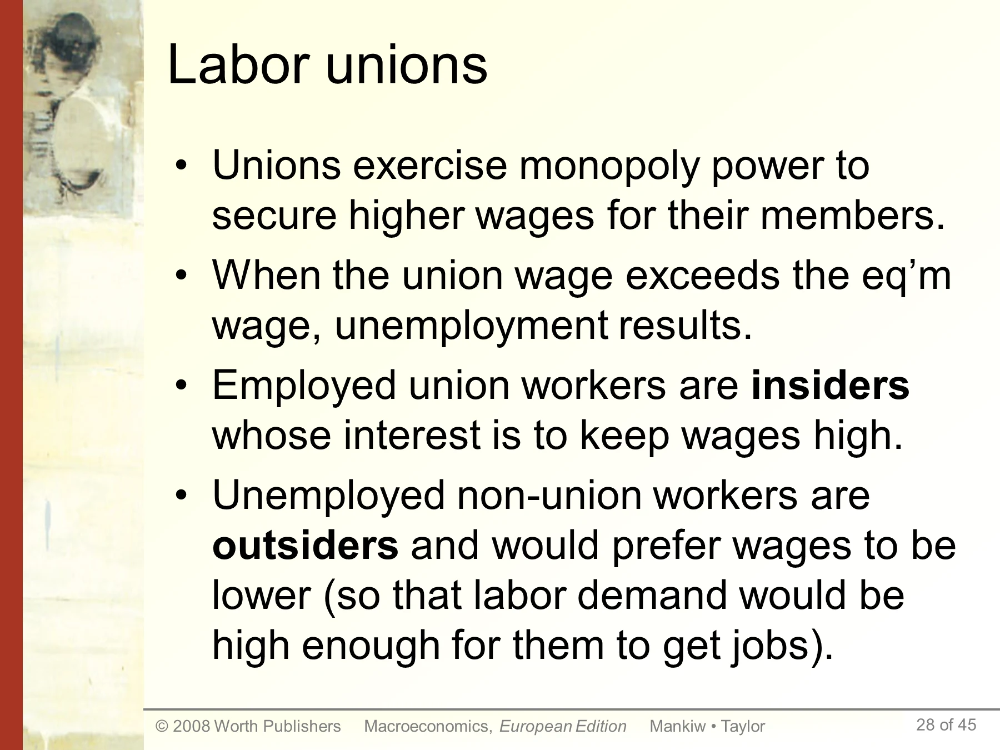
工会运用垄断力量为其成员争取更高的工资。
当工会工资高于均衡工资时，失业随之产生。
已就业的工会成员是局内人（insiders），他们的利益在于把工资维持在高位。
失业的非工会工人是局外人（outsiders），他们希望工资更低（这样劳动需求才足以让他们找到工作）。
工会的特殊之处不在它能提高工资——任何稀缺技能都能提高工资——而在于它把工资的决定权从个人手里拿走，交给了集体谈判，并且谈判桌上的席位只分给已经在岗的人。
局内人与局外人的区分，正是从这里来的。局内人有工作，关心的是工资乘以工时；局外人在门外，关心的首先是有没有位置。这两群人对「合适工资」的判断天然冲突：工资定在均衡之上，局内人获益，局外人被挡在门外。而在工会的决策机制里，只有局内人投票、缴费、出席。局外人承担了高工资的成本，却没有参与定价的权利。这就是内部人—外部人理论的核心：不是局内人恶意，而是激励结构使他们不必考虑局外人的处境。
把这条逻辑推一步，会得到一个有点反直觉的结论：局内人的工资越高，工会内部的团结反而越稳固，因为现有成员的地位更值钱，他们更愿意为守住它付出代价；而失业的局外人越多，越难组织起来改变规则，因为他们分散、没有缴费基础、也没有谈判代表。于是高工资与高失业可以互相加固，形成一段很长时间的僵持。
不过工会的净效应不能只算这一笔。集体谈判也带来「发声」渠道：工人对工作条件的不满可以通过谈判表达，而不是靠辞职，这会降低离职率，让企业更愿意投资培训。有研究认为，这种效应能部分抵消工资溢价造成的就业损失，尤其在存在双边垄断的行业。争论的焦点不是工会是否提高工资——它确实提高——而是提高的这部分是否被生产率收益抵消。经验上，抵消是部分的，不是全部的。
把工会等同于「劳动力市场的卡特尔」是一种简化。卡特尔只限制供给，工会同时改变谈判程序与信息结构。
Collective wage agreements tend to disfavour outsiders. Trade unions may ask for too high wages in one sector, which pushes employment to a level below the one that would be desired by outsiders.
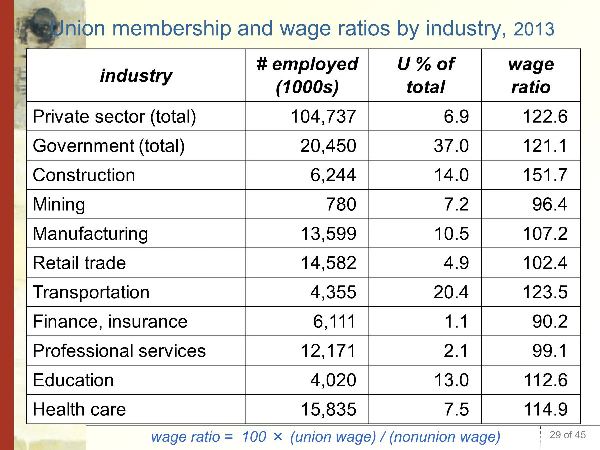
| 行业 | 就业人数（千人） | 工会成员占比（%） | 工资比 |
|---|---|---|---|
| 私营部门（合计） | 104,737 | 6.9 | 122.6 |
| 政府部门（合计） | 20,450 | 37.0 | 121.1 |
| 建筑 | 6,244 | 14.0 | 151.7 |
| 采矿 | 780 | 7.2 | 96.4 |
| 制造业 | 13,599 | 10.5 | 107.2 |
| 零售 | 14,582 | 4.9 | 102.4 |
| 运输 | 4,355 | 20.4 | 123.5 |
| 金融保险 | 6,111 | 1.1 | 90.2 |
| 专业服务 | 12,171 | 2.1 | 99.1 |
| 教育 | 4,020 | 13.0 | 112.6 |
| 医疗 | 15,835 | 7.5 | 114.9 |
工资比 ＝ 100 ×（工会成员工资）/（非工会成员工资）。
表里最稳的两个数是私营部门与政府部门。私营部门工会成员只占 6.9%，但工资比 122.6，也就是工会成员周薪高出约 23%；政府部门成员占 37.0%，工资比 121.1，溢价幅度几乎一样。运输业是最好的单例：20.4% 的成员比例对应 123.5 的工资比。
把三行放在一起，可以看出一个横向规律：工会成员比例越高的行业，工资比也越高，两者的相关系数约 0.5。这符合垄断定价的逻辑——覆盖率越高，谈判单位覆盖的岗位越多，企业能绕开的余地越小。
需要提醒的是，工资比不等于「工会带来的因果效应」。工会密集的行业本身可能就是高工资行业，工人也可能因为工资高才更愿意组织工会。
The wage ratio equals the average weekly earnings of union members divided by that of non-union members. (Here, “union members” does not include non-union members who are represented by unions; however, including them in these calculations does not substantively change the results.)
For example, in Transportation, 20.4% of workers are in unions, and on average they earn 23.5% more per week than non-union members in that industry.
In 2013, 11.8% of all workers in the U.S. were members of unions. The data on this slide show two things: 1) union workers typically earn more than non-union workers (about 22% more on average). 2) the greater the percentage of union workers in an industry, the higher the wage ratio (the correlation is about 0.5)
Source: BLS.gov
Note: Due to space constraints on the slide, a few industries were omitted.
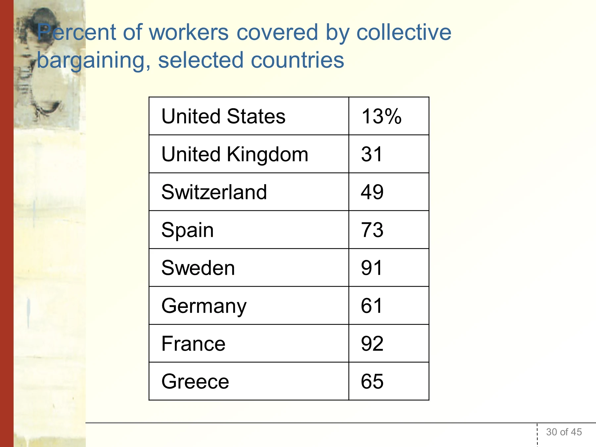
| 美国 | 13% |
| 英国 | 31% |
| 瑞士 | 49% |
| 西班牙 | 73% |
| 瑞典 | 91% |
| 德国 | 61% |
| 法国 | 92% |
| 希腊 | 65% |
这张表衡量的是「覆盖率」而不是「成员率」，两者可以差很远。法国工会成员不到一成，覆盖率却有 92%——因为谈判达成的协议会被行政扩展到全行业，非成员也一并适用。所以真正决定工资刚性强度的，是覆盖率。
美国的 13% 与法国的 92% 之间差了一个数量级，这解释了为什么同样的需求冲击在两个经济体里表现不同：美国的工资可以更快下调，法国更难。工会的宏观影响取决于制度覆盖面，而不取决于有多少人缴会费。
A subset of Table 7-1 (p.193), focusing on European countries.
Source: Same as the textbook.
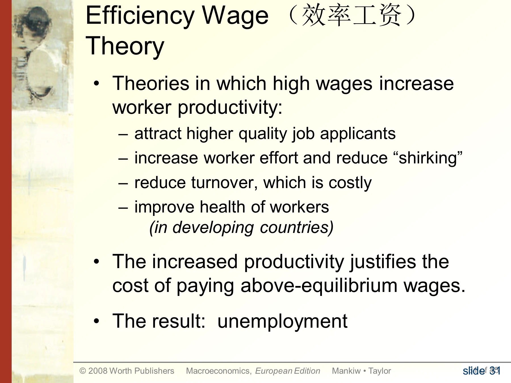
这类理论认为高工资能提高工人的生产率：
生产率的提高足以抵偿支付高于均衡工资的成本。
其结果是：失业。
效率工资与前两种刚性有一个根本区别：最低工资是法律强加的，工会工资是谈判争来的，效率工资是企业自己愿意付的。企业明明可以在更低的工资上招到人，却主动多付，这个行为需要一个解释，而四条理由就是四个不同的解释。
第一条是筛选。企业招人时看不清能力，只能从应聘者中挑。工资是一个筛子：工资定得低，来的人多半是「别处去不了」的人；工资定得高，来的人里既有高手也有碰运气的，但应聘池整体上移，企业从更大的池子里挑，选中的平均质量更高。这条逻辑的关键在于工资影响的是「谁愿意来」，而不是「来了多努力」。
第二条是纪律。监督工人是否偷懒要成本，而且监督永远不完全。工人偷懒的期望收益是省下的努力，期望成本是「被发现并解雇」的概率乘以「失去这份工作」的损失。这个损失就是工资溢价：如果外面能立刻找到同样好的工作，被开除无所谓；如果这份工作比外面的好很多，被开除的代价就大。所以企业不降工资，是因为降工资会让所有工人都更想偷懒。这条逻辑还有一个集体层面的推论：当所有企业都付溢价时，市场上存在一批失业者，被开除的人要经过一段失业才能回到同样好的岗位，失业本身就成了纪律装置。均衡失业在这里不是失灵，而是机制的一部分。
第三条是流动。招一个人、培训一个人都要花钱，而这些钱大部分沉在企业里。工人离职，投资就打了水漂。离职率对工资敏感，所以企业用溢价买低离职率。这条在技能专用性强的岗位上最有说服力——一个花了半年培养的技师走了，损失远高于每月多付的工资。
第四条是健康，只在低收入国家成立。当工资低到影响膳食与医疗时，吃得更好的人体力更好、缺勤更少，产出随工资上升。这条逻辑有明确的适用范围：工资高到基本营养不再构成约束之后，它就失效了。
四条理由的共同结构是：企业买的不是工时，是效率，而效率是工资的函数。单个企业这样做是理性的，但如果所有企业都这样，实际工资整体上移，就业量由需求曲线决定，愿意工作的人多于岗位，失业出现。这个失业没有人选择，也没有人受益——它是分散决策的加总后果。
运用我们刚刚讲过的内容，提出一项或几项旨在降低自然失业率的政策。
说明你的政策针对的是摩擦性失业还是结构性失业。
Possible answers: Stop raising the (nominal) minimum wage, so that its real value will gradually erode to zero. Regulate unions (just like other monopolies are regulated) to reduce unions’ impact on wages. Reduce the generosity of unemployment insurance. Government employment agencies to increase the accessibility of information about job vacancies and available workers. Public funding to help retrain workers displaced from jobs in declining industries.
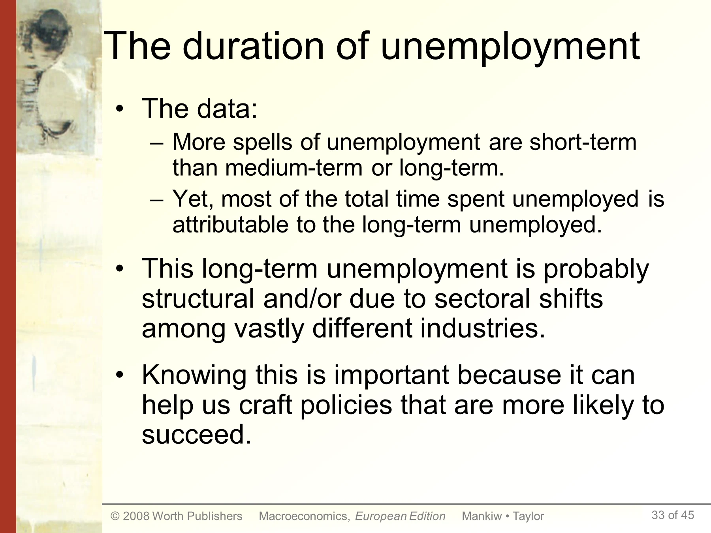
数据表明：
这种长期失业很可能是结构性的，或者源于差异极大的行业之间的部门转移。
了解这一点很重要，因为它有助于我们设计更可能成功的政策。
这两句话看起来互相矛盾，其实只是数了两样东西：一次一次地数，和一周一周地数。
举个具体例子。假设某月有 100 人失业，其中 90 人只失业 1 个月就上岗，另外 10 人失业 12 个月。按次数算，短期占 90%，长期只占一成；按时间算，总失业时间是 90×1 ＋ 10×12 ＝ 210 个月，其中长期失业者贡献了 120 个月，占 57%。同一批人，换个分母，结论就反过来了。
这个算术之所以重要，是因为它决定了政策该往哪儿打。如果目标是减少「经历失业的人次」，那就该针对短期的、频繁发生的那一类：改善信息、缩短招聘流程、调整失业保险的期限结构。如果目标是减少「社会总共损失了多少劳动时间」，那就该针对长期那一小撮人：再培训、搬迁补贴、针对部门转移的定向安置。两类政策的对象几乎是不同的人，混在一起谈就会两头落空。
长期失业为什么难治，机制上有两层。一层是技能折旧：失业越久，技能越旧，越难被雇用，于是失业更久——这是一个自我强化的循环，f 会随着失业时长本身下降，而基本模型的 f 是常数。另一层是雇主筛选：招聘方看到简历上有两年的空档，会把它读成负面信号，即使这个人的能力没有变。这两层都意味着，长期失业不能靠等，等只会让它更难结束。
还有一个观察值得记住：长期失业的占比在经济扩张期下降得比失业率本身慢。这意味着复苏能解决「人数」，不太能解决「时间」。
Regarding the point about structural unemployment and sectoral shifts:
Structural unemployment - workers are waiting for jobs to become available, but there just aren’t enough jobs to go around; hence, this can be long-term unemployment. Sectoral shifts across vastly different industries, e.g. a shift in demand from textiles to software design; obviously, jobs in these industries require vastly different skill sets. Sectoral shifts can occur among similar industries (e.g., demand shifts from desktop to laptop computers), but this is less likely to produce long-term unemployment.
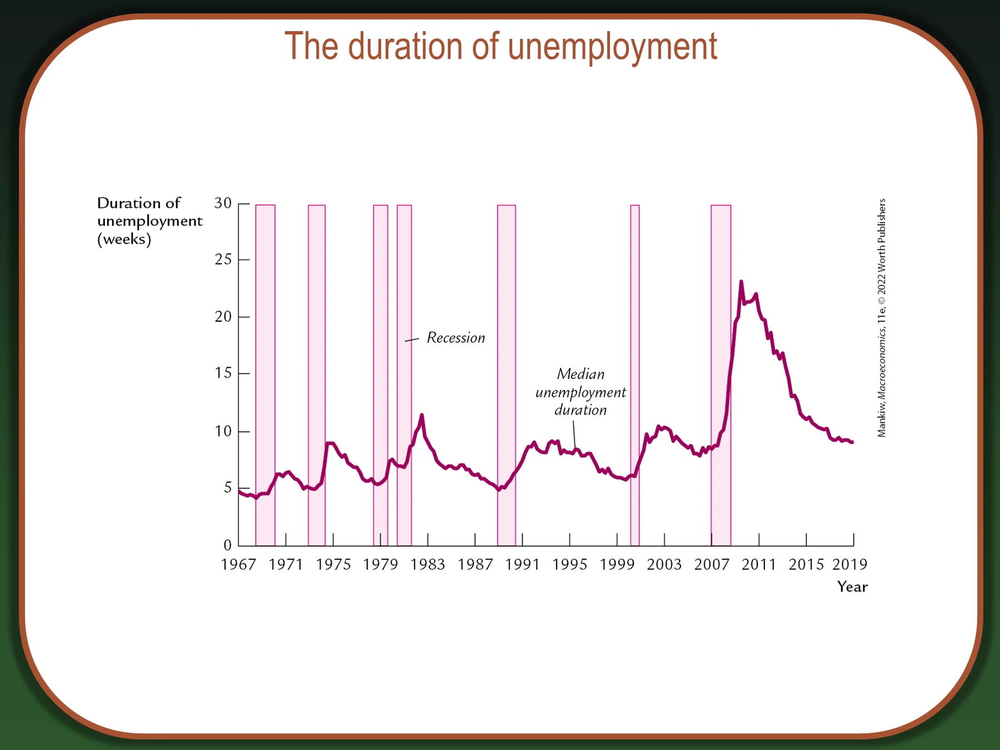
平均持续时间与中位持续时间，美国。
图中 横轴为年份，纵轴为周数。两条线分别为平均持续时间（UEMPMEAN）与中位持续时间（UEMPMED）。平均线长期高于中位线约 10 周；2020 年 3–4 月两条线同时骤降。
平均比中位长约 10 周，这个差距本身就是信息。如果分布对称，两个数应该接近；差这么多，说明分布严重右偏——大量人几周内就上岗，少数人一两年找不到。平均被那少数人拉高了，中位数不受影响。
2020 年春天的骤降更值得看。封锁让几百万人同时失业，他们刚进入失业状态，持续时间接近零，于是平均值被这批新人拉低。这不是劳动力市场变好了，恰恰是变坏了的统计假象。持续时间是存量指标，会被流量突变扭曲。
Notice the average is often about 10 weeks (2.5 months) longer than median. The massive dip in 2020 was a result of the shutdown in March/April.
Source: St. Louis Fed FRED UEMPMED UEMPMEAN
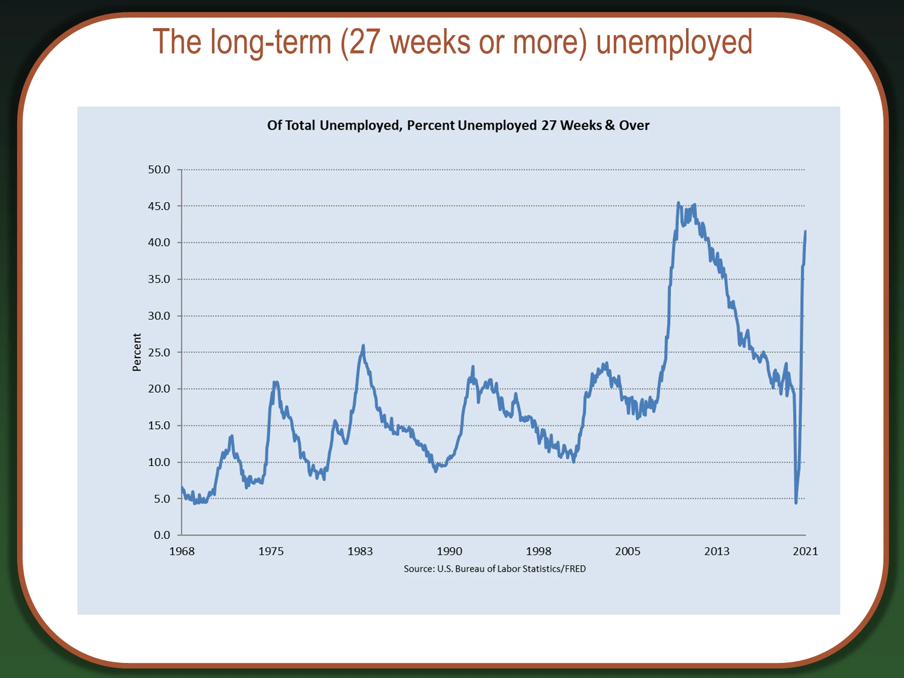
长期失业者占全部失业者的比例，美国。
图中 横轴为年份，纵轴为 27 周及以上失业者占失业总人数的百分比。2008 年金融危机后该比例升至 40% 以上，2020 年疫情后再次大幅上升。
27 周这个门槛不是随意的：美国常规失业保险最长给付 26 周。跨过这条线的失业者，不仅失业时间长，而且通常已经用完了保险，收入支持断崖式下降。所以这个指标同时标记了「难就业」和「无保障」两件事。
两次高点都出现在深度衰退之后，而且回落很慢。2008 年之后，长期失业占比用了将近七年才回到危机前水平；这意味着衰退的伤害不是一次性的，它在劳动力市场上留下了疤痕。周期性冲击可以变成结构性失业，因为失业时间本身会降低再就业概率。
Remind students that standard unemployment benefits last 26 weeks. Both the Financial Crisis of 2008 and Covid resulted in a lot of people being unemployed for long periods of time.
Source: St. Louis Fed FRED: LNS13025703
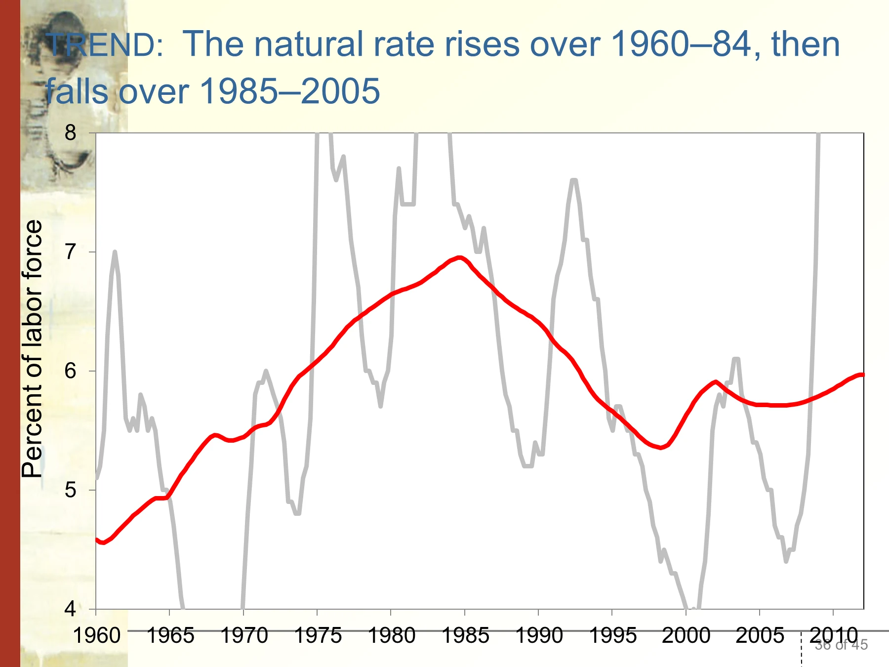
自然失业率，美国，1960–2005。
图中 横轴为年份，纵轴为自然失业率（%）。1960 年为 5.1%，1970 年代末升至 7.0% 的峰值，此后持续回落，2005 年前后降至 3.8%。虚线为平滑后的趋势。
这条曲线把本章前半段的抽象公式变成了一个需要解释的事实。u ＝ s/(s＋f) 只说失业率由两个流量决定，没说这两个流量为什么变。1960 年到 1980 年，自然率从 5.1% 升到 7.0%，涨了将近四成；此后二十多年又跌回 3.8%，跌得比涨得更多。一个只由制度和摩擦决定的量，不该这样大起大落——所以这些变动本身就是待解释的现象。
接下来的四页给出四种候选解释，它们不是互斥的，而是同时起作用：实际最低工资的走势、工会成员的萎缩、部门转移的频率、人口年龄结构的变化。每一种都对应公式里的一个参数——最低工资和工会抬高工资刚性，压低就业量；部门转移提高 s、压低 f；人口结构改变 s。
读这条曲线时要注意估计方法带来的不确定性。自然率无法直接观测，图上这条线是用实际失业率的长期平均反推的，而反推时对未来的失业率做了假设。这意味着曲线的两端最不可靠，尤其是最近十年——我们其实不知道 2008 年之后自然率走到了哪里，只知道它大概在 4% 到 5% 之间。
还有一个方法上的提醒：这条线先升后降的形状，与人口结构的形状高度相似，这既是巧合也可能不是。多种因素同向变动时，用时间序列很难分辨谁在起作用，这也是为什么后面每种解释都要配合跨国比较或横截面证据。
The purpose of this slide is to establish the trend behavior of the natural rate in recent decades: rising until the early 80s, then falling from the mid-80s through the early 2000s.
(It is probably too soon to say what happened to the trend in 2008-2010, due to the steep recession and to the fact that the natural rate data used in this graph were estimated as the average of unemployment rates from 10 years before to 10 years after each date, with future unemployment rates set at 5.5 percent.)
The following slides will show that the theories in this chapter are (mostly) consistent with the trend behavior of the natural rate. The graph on this slide is similar to Figure 7-1 (near the beginning of this PowerPoint presentation), with modifications to the vertical scale and colors to highlight the trend behavior.
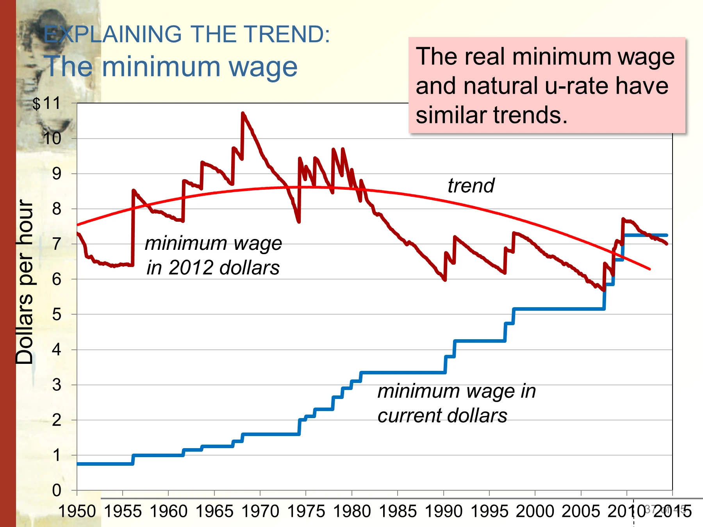
实际最低工资与自然失业率的走势相似。
图中 横轴为年份，纵轴为美元。一条阶梯线为名义最低工资（当期美元），一条平滑线为按 2012 年美元折算的实际最低工资。实际最低工资在 1970 年代末达到高点，约 7.3 美元，此后一路降到 2012 年的约 6.5 美元。
两条线的形状确实像：都在 1970 年代末见顶，然后长期下行。但相似不等于因果，这条证据的强度取决于一个容易被忽略的细节——起作用的是实际最低工资，不是名义值。
名义最低工资由立法决定，只会上调，不会下调，图上是阶梯状的。实际值等于名义值除以物价指数，物价年年涨，所以两次立法之间的实际值会自己往下走。一段长期不调名义最低工资的时期，等价于一段持续放松管制的时期。1980 年代之后美国正是如此：名义值偶尔上调，但幅度跟不上通胀，实际值一路下滑，对工资的约束力随之减弱。这正好与自然率的下降同时发生。
不过最低工资覆盖的工人比例很小，它能解释的自然率变动幅度有限。这条解释更适合当作「同向的辅证」，而不是主因。
The trend in the real minimum wage rises until the mid to late 1970s, then falls. This is fairly similar to the trend of the natural rate of unemployment.
The U.S. Department of Labor has lots of good information on the minimum wage, at: http://www.dol.gov/dol/topic/wages/minimumwage.htm [Two sources of data on the federal minimum wage are slightly different in the late 1960s. These small differences have no significant impact on the trend, or the message of this graph.]
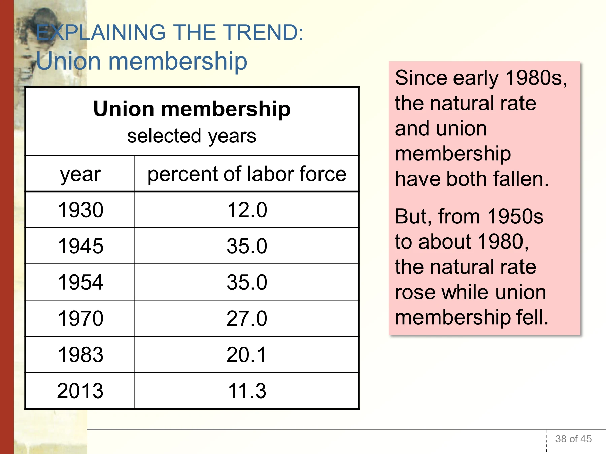
自 1980 年代初以来，自然失业率与工会成员比例同时下降。
但是，从 1950 年代到 1980 年前后，自然失业率上升，而工会成员比例下降。
| 工会成员，部分年份 | 占劳动力的百分比 |
|---|---|
| 1930 | 12.0 |
| 1945 | 35.0 |
| 1954 | 35.0 |
| 1970 | 27.0 |
| 1983 | 20.1 |
| 2013 | 11.3 |
这一页诚实地摆出了一个反例，而反例比正例更有教学价值。1980 年代之后，工会成员比例从 20.1% 一路降到 11.3%，自然率同期也在下降，两者同向，符合理论。但 1950 年代到 1980 年这一段，工会从 35% 掉到 20%，自然率却从 5% 出头涨到 7%，方向相反。
这是否证伪了工会解释？不能这样读。工会理论说的是「其他条件不变时，工会力量下降会降低自然率」，而 1950 到 1980 年间其他条件远不是不变的：婴儿潮涌入劳动力市场（年轻人离职频繁，s 高）、实际最低工资上行、两次石油危机引发大规模部门转移、女性劳动参与率快速上升。这些因素同时把自然率往上推，工会的效应被淹没了。一个变量缺席解释不了全部，不等于它没有作用。
但也不能就此放过。这段反向证据提醒我们，这类「趋势吻合」的论证本质上很弱：只要有四五个候选因素，总有一个能与曲线同向。真正有说服力的检验要能分离出单一变量的独立效应，比如比较工会覆盖率不同的行业或国家在同一冲击下的表现。用全国的加总时间序列做因果推断，几乎必然过度拟合。
从 1980 年代之后的同向下降里，能得到的合理结论只有一条：工会力量的削弱，是自然率下行的一个说得通的贡献项，量级大概在零点几个百分点，不是主因。
A table on an earlier slide showed a positive correlation between the union wage premium and union members’ share of the labor force across industries.
We would expect a similar relationship over time in the aggregate data: as the ratio of union members to all workers rises (falls), the union wage premium and hence natural rate of unemployment should also rise (fall). The data since the early 1980s are consistent with this expectation. However, the data from the 1950s to the early 1980s are not: the natural rate rose, but union membership declined.
Does the inconsistency from the 1950s to the early 1980s mean the theory is irrelevant? Not necessarily, as other determinants of the natural rate were not constant during the period.
source: AFL-CIO website, http://www.aflcio.org and Current Population Survey, Bureau of Labor Statistics
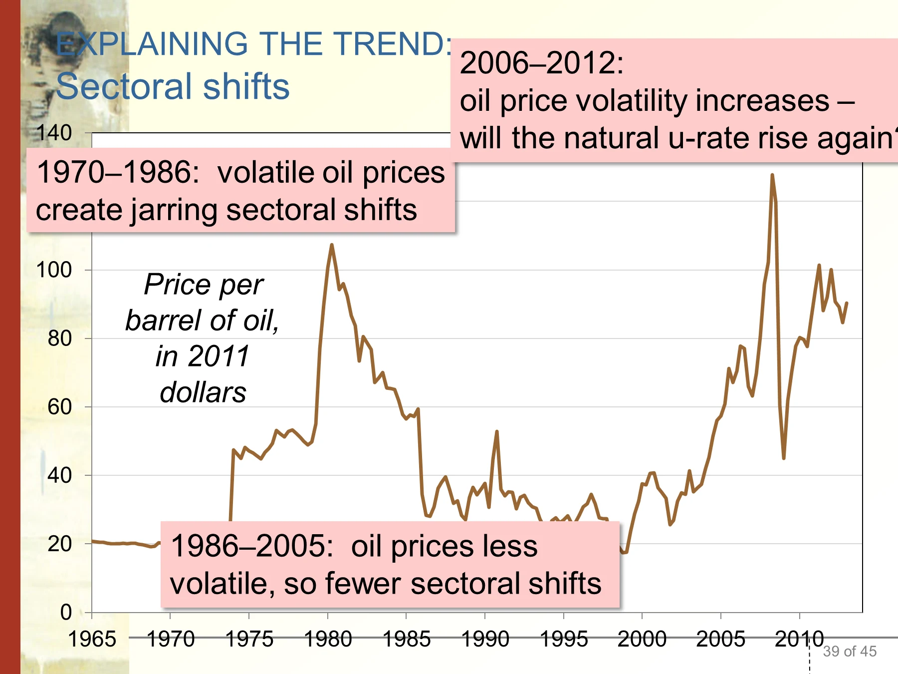
2006–2012：油价波动加剧——自然失业率会再次上升吗？
1970–1986：油价剧烈波动，造成剧烈的部门转移。
1986–2005：油价波动较小，部门转移较少。
图中 横轴为年份，纵轴为每桶石油价格（2011 年美元）。1970–1985 年间实际油价在 20 至 100 美元之间大幅摆动；1986–2002 年间基本稳定在 20–40 美元；2002 年后再度攀升。
部门转移没法直接测量——不存在一个「部门转移指数」。所以这里用一个代理变量：油价的波动幅度。逻辑是，油价大幅变动会同时打击产油区的就业、抬高耗油行业的成本、改变消费者对车型和住房位置的选择，这些都是一次需求构成的重新洗牌。
三段走势与自然率对得上：1970–1985 年油价在 20 到 100 美元之间反复冲撞，自然率上升；1986–2005 年油价平稳，自然率下降；2002 年之后再度攀升，于是有了这一页的提问。
相关性成立，但代理变量很粗。油价波动只是部门转移的一种来源，技术进步、贸易开放、产业政策同样在制造转移，而它们不体现在这条曲线上。
Earlier in the chapter, we learned that sectoral shifts are a source of job separations and lead to frictional unemployment. One would expect that a decrease in the frequency and magnitude of sectoral shifts would be associated with fewer job separations, less frictional unemployment, and a lower natural rate of unemployment.
Unfortunately, there is no single “index of sectoral shifts.” However, we know that large changes in oil prices are one important source of sectoral shifts. A significant fall in the price of oil causes a decrease in demand for workers at oil fields in Oklahoma and Texas, and an increase in demand for workers at factories that produce SUVs. A significant increase in oil prices would do the opposite.
The graph shows data on the price of oil since 1965. During 1970-1985, the real price of oil fluctuated between $20 and $100. Also during this time, the natural rate of unemployment was rising. During 1986-2002, the real price of oil was in the $20-40 range except for a brief spike during the Gulf War. Also during this time, the natural rate of unemployment was falling. The data are roughly consistent with the notion that sectoral shifts contribute to the natural rate.
Note the recent increase in oil prices: from about $22 to $70 during 2002-2006:1. This represents a sectoral shift and may contribute to an increase in the natural rate of unemployment. Or maybe not, as oil consumption per dollar of GDP is lower today than in the 1970s and 1980s. source: Dow Jones & Company, obtained from: http://research.stlouisfed.org/fred2/
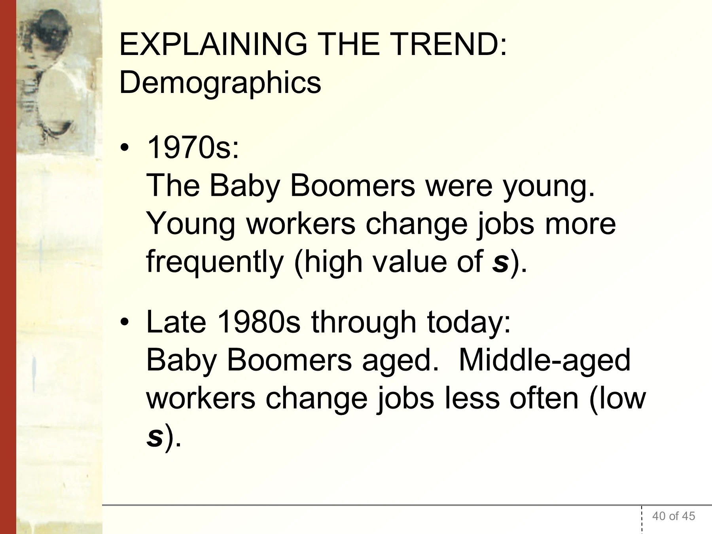
1970 年代：婴儿潮一代很年轻。年轻工人换工作更频繁（s 较高）。
1980 年代后期至今：婴儿潮一代变老。中年工人换工作不那么频繁（s 较低）。
这是四种解释里唯一直接作用于公式分子的。年轻人离职频繁，因为他们还在寻找适合自己的岗位，试错的收益高、成本低；中年人已经在某个岗位上积累了专用技能，换工作的损失大，所以 s 低。当一大群人同时年轻、又同时变老时，总体的 s 会先升后降，失业率跟着先升后降。
婴儿潮一代在 1970 年代进入劳动力市场，正好对应自然率上升的那一段；到 1990 年代他们四十多岁，又对应下降的那一段。这是纯粹的人口效应，与任何政策无关，也因此特别难被误认为政策成效。
它的解释力有上限：人口结构变化缓慢，无法解释 1980 年代初那几年的陡升陡降。
For more details on this, see the book.
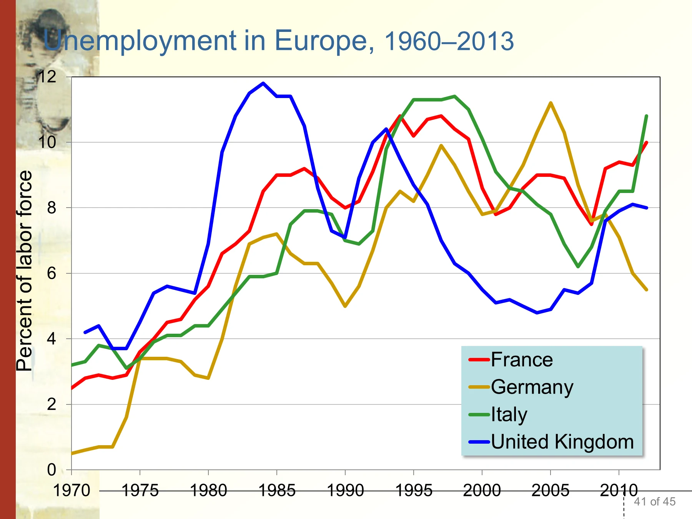
法国、德国、意大利、英国的失业率。
图中 横轴为年份，纵轴为失业率（占劳动力的百分比）。四条线分别对应法国、德国、意大利、英国。1960 年代四国均在 1%–4%，此后持续上行，1990 年代中后期达到 8%–12%，之后回落但未回到起点。
这张图最刺眼的地方不是水平高，而是没有回到起点。1970 年代的两次石油冲击之后，美国的失业率随复苏回落，欧洲的却停在了一个新的、更高的平台上。同一场冲击，一个经济体恢复了，另一个没有。
这种「台阶式」上移意味着冲击留下了永久性的痕迹。如果是纯粹的周期波动，曲线应该围绕一个固定水平上下摆；这里却是每次冲击之后，中枢自己抬高了。这提示我们，欧洲的失业中有很大一块已经不是周期性的，而是结构性的——工资没有随失业上升而下调，于是需求恢复时，岗位没有跟着恢复。
Figure 7-6 on p.203.
Source: Bureau of Labor Statistics, http://www.bls.gov/fls/home.htm
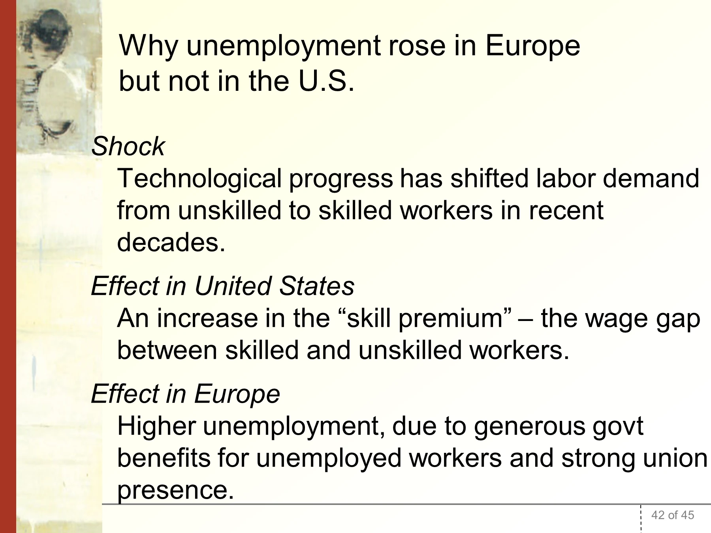
冲击：近几十年来，技术进步使劳动需求从非技能工人转向技能工人。
在美国的效果：「技能溢价」上升——技能工人与非技能工人之间的工资差距扩大。
在欧洲的效果：失业上升，原因是政府对失业者的慷慨给付与强大的工会力量。
这一页把整章的机制收在了一个对照里：同一个冲击，两个经济体，两种调整方式。
冲击本身是技术性的——生产越来越多地需要技能，非技能劳动的相对需求下降。在图上，这表现为非技能劳动的需求曲线整体左移。需求左移之后，市场必须完成一次调整，而调整只有两条路：价格调整，让非技能工人的工资降下来，就业量不变；数量调整，工资不动，就业量减少。
美国走的是第一条。非技能工人的相对工资下降，技能溢价扩大，就业没有大幅萎缩。代价是收入分配恶化：同样是全职工作，差距越拉越大。这个代价是可见的、渐进的，政治上吵闹但不致命。欧洲走的是第二条。最低工资、集体谈判的覆盖、较高的失业给付，共同把非技能工人的工资托住，工资降不下来，企业只能用更少的人。代价是失业，而且是长期失业——因为工资不降，岗位就不会重新出现。
两种调整都不好，区别在于代价落在谁身上。价格调整的代价落在「有工作但工资低」的人身上，数量调整的代价落在「没工作」的人身上。哪个更可取，取决于社会如何评价「低工资的就业」与「有保障的失业」，这不是纯经济学能回答的问题。经济学能说的是：不能既要工资不降，又要就业不减，这两件事在需求左移时不可能同时成立。
这一页也解释了为什么欧洲的失业曲线是台阶状的。数量调整一旦发生，就很难逆转：失业者技能退化、雇主歧视长期空档、工会继续保护在岗者。冲击过去之后，需求曲线回来了，但那些被挡在门外的人回不来。刚性的代价不是一次性的失业，而是永久性的排除。
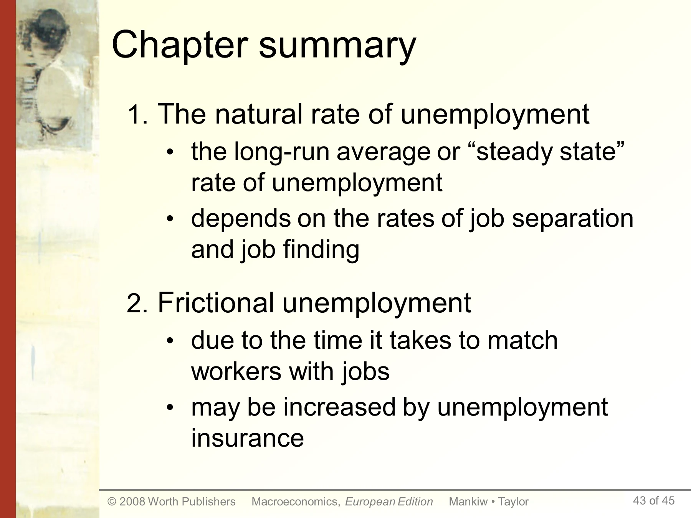
1. 自然失业率
2. 摩擦性失业
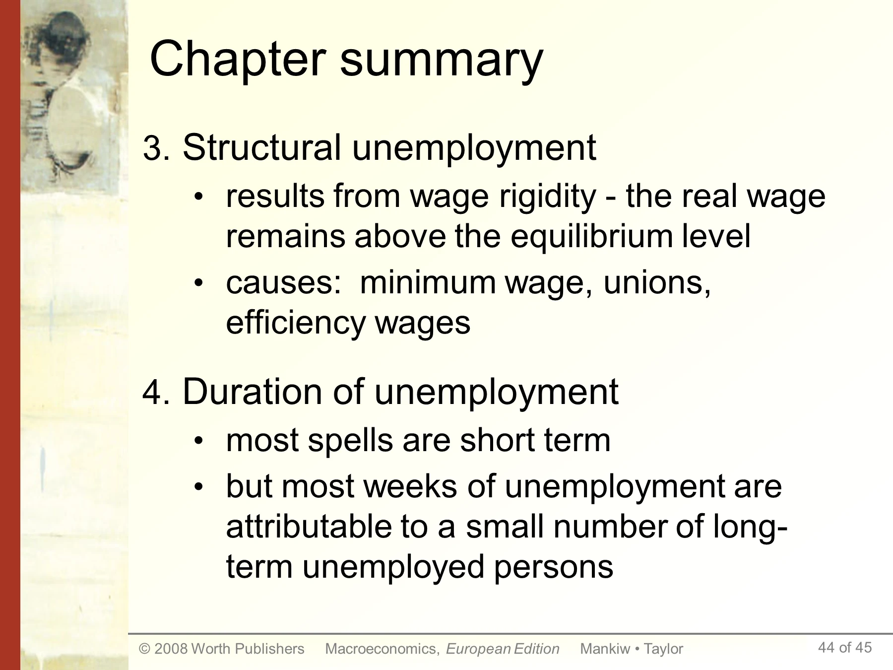
3. 结构性失业
4. 失业的持续时间
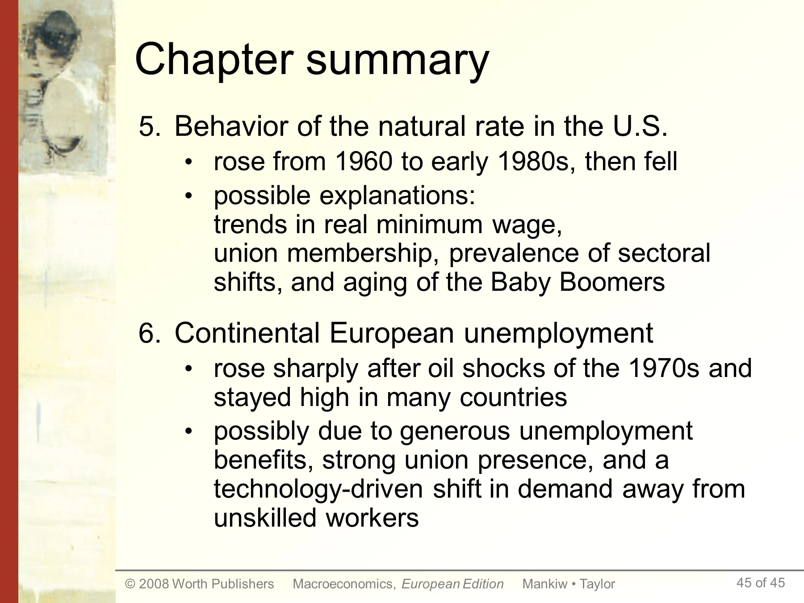
5. 美国自然失业率的行为
6. 欧洲大陆的失业
这一章把失业从「一个数字」拆成了「一套流量」。劳动力被分成就业与失业两块，两块之间每月有双向的流动，失业率的稳态值就是这两股流量的比值 u ＝ s/(s＋f)。这个式子极其简单，却定下了一条判据：任何不改变 s 或 f 的政策，都不可能改变自然失业率。它也解释了为什么「岗位总数够了」不足以消除失业——只要 f 小于 1，池子就永远排不空。
f 小于 1 有两个来源，它们构成了本章的骨架。一是求职摩擦：能力、技能、地理、信息四重差异使匹配需要时间，部门转移则不断把新的失业者送进这个搜寻过程。这类失业在岗位充足时依然存在，因此对刺激总需求不敏感。二是工资刚性：实际工资被顶在均衡之上，愿意工作的人多于岗位，企业只能配给。最低工资、工会、效率工资是三条不同的成因，但它们在劳动市场图上留下的是同一条水平线。
失业保险是本章唯一被两面打量过的政策。它压低 f，延长失业时间；同时它也可能改善匹配质量，提高生产率。收益与成本都真实，量级上前者通常小于后者，于是问题变成参数设计而非有无。失业持续时间的算术则提示，政策的对象取决于目标：要减少失业人次，针对短期摩擦；要减少失业总时间，针对长期的结构性失业者。
所有结论都建立在一组强假设上：劳动力总量固定、s 与 f 外生、工资刚性的来源被当作给定。放松其中任何一条，结论都会变——f 随失业时长下降会制造滞后效应，工资与就业的反馈会改变政策的方向，劳动参与率的变动会让失业率失真。本章给出的是长期水位的地图，不是短期波动的解释；把这张地图当成天气预报，是读这一章最容易犯的错。